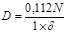
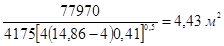
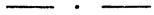
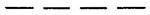
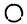
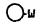
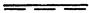

ОРДЕНА ТРУДОВОГО КРАСНОГО ЗНАМЕНИ ПРОЕКТНЫЙ ИНСТИТУТ ПРОМСТРОЙПРОЕКТ
ПОСОБИЕ 4.91 к СНиП 2.04.05-91
Противодымная защита при пожаре
(2 редакция)
Москва, 1992 г.
Главный инженер института И. Б. Львовский
Главный специалист Б. В. Баркалов
Москва, 1992 г.
Пособие 4.91 к СНиП 2.04.05-91 «Противодымная защита при пожаре» одобрена техническим советом и введена в действие институтом Промстройпроект.
Рецензент - доцент кафедры «Пожарной безопасности в строительстве» Высшей инженерной пожарно-технической школы МВД РФ, доктор техн. наук Есин В. М.
Редактор - инженер Агафонова Н. В.
С введением в действие второй редакции «Пособия 4.91» утрачивает силу первая редакция данного пособия.
ПЕРЕЧЕНЬ ПОСОБИЙ
к СНиП 2.04.05-91
«Отопление, вентиляция и кондиционирование»
1.91. Расход и распределение приточного воздуха
2.91. Расчет поступлений теплоты солнечной радиации в помещения
3.91. Вентиляторные установки
4.91. Противодымная защита при пожаре
5.91. Размещение вентиляционного оборудования
7.91. Схемы прокладки воздуховодов в зданиях
8.91. Численность персонала по эксплуатации систем отопления, вентиляции и кондиционирования
9.91. Годовой расход энергии системами отопления, вентиляции и кондиционирования
10.91. Проектирование антикоррозийной защиты вентиляционных систем
11.91. Расчетные параметры наружного воздуха для типовых проектов
12.91. Рекомендации по расчету инфильтрации наружного воздуха в одноэтажные производственные здания.
ПРЕДИСЛОВИЕ
Пособие «Противодымная защита зданий и помещений» разработано Промстройпроектом (канд. техн. наук Б. В. Баркалов) на базе материалов пособия Промстройпроекта «Удаление дыма из зданий и помещений» 1988 г., утвержденного приказом института Промстройпроект от 05.04.88 35, исследований ВНИИПО МВД СССР и МНИИТЭП Мосгорисполкома, частично подтвержденных натурными испытаниями на опытных пожарах в многоэтажных жилых зданиях г. Москвы.
Раздел 1 пособия коренным образом переработан. Предложен новый, простой метод определения производительности системы дымоудаления из коридоров и холлов. Расчеты сопротивления сети построены на общетехнических положениях и формулах, применяемых в вентиляционной технике. Расходы дыма из коридоров приведены по формулам кандидатов технических наук И. И. Ильминского и М. М. Грудзинского, а из коридоров, имеющих два и большее число выходов на лестничные клетки сокращены на основе материалов, представленных М. М. Грудзинским, что обеспечивает экономию расходов воздуха, по сравнению с расходами по пособию 1988 г.
Раздел 2 существенно переработан. Необходимость дымоудаления поставлена в зависимость от времени опускания дымового облака до безопасного уровня - 2,5 м от пола и времени, необходимого для эвакуации людей из помещения.
Расход дыма определяется на основании «Периметра очага пожара» - принятого по материалам исследований английских ученых Е. Батчер, А. Парнел и Д. Драйздейл [2] и [3] или по скорости воздуха в дверях эвакуационных выходов, при этом коэффициент расхода м = 0,64 принят по ГОСТ 12.1.004-91 вместо 0,8 в издании 88 г., как необоснованные. Исключены расчеты расхода дыма на 1 м2 пола помещения.
Раздел 3 разработан на основе исследований М. М. Грудзинского, откорректирован и дополнен данными по проектированию подачи воздуха в лестничные клетки 3-го незадымляемого типа и в тамбуры-шлюзы перед лестничной клеткой в подвальном этаже с помещениями категории В и в машинные отделения лифтов в зданиях категорий А и Б.
Пособие не распространяется на проектирование дымоудаления из помещений сцены культурно-зрелищных учреждений (театров, кинотеатров, клубов), предусмотренное СНиП 2.08.02-89 и ВСН 45-86. Программы расчета на ЭВМ дымоудаления из коридоров и холлов жилых, общественных и производственных зданий, а также подпора воздуха во внутренние незадымляемые лестничные клетки и лифтовые шахты (PRITOK) и тамбур-шлюзы разработаны во ВНИИПО МВД СССР и МНИИТЭП.
Промстройпроект выражает благодарность ученым и инженерам, предоставившим материалы, рецензии и советы при разработке пособия: Е. И. Бобровой, М. М. Грудзинскому, Б. В. Грушевскому, Е. Д. Головатому, В. М. Есину, И. И. Ильминскому, В. А. Орлову, Т. И. Садовской, Г. И. Стомахиной, С. С. Требукову, В. П. Титову, В. С. Тишкину.
Пособие издано до выхода официального издания СНиП 2.04.05-91, в связи с чем возможны неточности в изложении требований этого документа.
Термины, принятые в пособии
Дымовой клапан - клапан с нормируемым пределом огнестойкости, открывающийся при пожаре.
Дымоприемное устройство - воздуховод (канал, шахта) с установленными в нем дымовыми клапанами или воздуховод с отверстиями для приема дыма и дымовым клапаном, общим для дымовой зоны или резервуара дыма или помещения.
Дымовая зона - часть помещения, общей площадью не более 1600 м2, из которой в начальной стадии пожара удаляется дым, с расходом обеспечивающим эвакуацию людей из горящего помещения.
Помещение (коридор), не имеющее естественного освещения - помещение (коридор), не имеющее окон или световых проемов в наружных ограждениях.
Резервуар дыма - дымовая зона, огражденная по периметру негорючими завесами, опускающимися с потолка (перекрытия) до уровня Y = 2,5 м от пола и более, площадью не более 1600 м2.
1.1. Удаление дыма при пожаре следует проектировать для обеспечения эвакуации людей из помещения здания в начальной стадии пожара, возникшего в одном из помещений:
а) из коридоров или холлов жилых, общественных, административно-бытовых и производственных зданий в соответствии с требованиями СНиП 2.04.05-91; 2.08.01-89; 2.08.02-89; 2.09.02-85*; 2.09,04-87 и 2.11.01-85 (см. приложение 1);
б) из коридоров производственных и административно-бытовых зданий высотой более 26,5 м;
в) из коридоров длиной более 15 м, не имеющих естественного освещения световыми проемами в наружных ограждениях (далее «без естественного освещения») в производственных зданиях категории А, Б и В с числом этажей 2 и более.
Требования не распространяются на коридоры и холлы, если для всех помещений, имеющих двери в этот коридор, проектируется непосредственное удаление дыма.
Допускается проектировать удаление дыма из производственных помещений категории В площадью 200 м2 и менее через примыкающий коридор.
1.2. Расход дыма (кг/ч), подлежащий удалению из коридора или холла следует определять по формулам:
а) для жилых зданий
б) для общественных, административно-бытовых и производственных зданий
где:
В - ширина большей из открываемых створок дверей при выходе из коридора или холла к лестничным клеткам или наружу, м; для жилых зданий на рис. 1 поз. 5 обозначены двери, учитываемые в расчете;
n - коэффициент, зависящий от общей ширины больших створок дверей, В м, открываемых при пожаре из коридора на лестничные клетки или наружу, равный:
при В = 0,6 0,9 1,2 1,8 2,4
для жилых зданий n = 1,0 0,82 0,7 0,51 0,41
для общественных, 1,05 0,91 0,8 0,62 0,5
административно-бытовых
и производственных зданий
НД - высота двери, м; при НД < 2 м - принимать НД = 2 м;
при НД > 2,5 м принимать НД = 2,5 м;
КД - коэффициент относительной полноты и продолжительности открывания дверей для выхода из коридора на лестничную клетку или наружу равный 1,0 - при эвакуации 25 чел. и более и 0,8 - при эвакуации менее 25 чел. через одну дверь.
1.3. Удаление дыма из коридоров и холлов следует проектировать системами с искусственным побуждением: к системе допускается присоединять не более двух дымовых шахт.
При расчете системы следует принимать удельный вес дыма 6 Н/м3, температуру дыма 300 °С и поступление воздуха в коридор через открытые двери на лестничную клетку или наружу.
Дымовые клапаны следует размешать на дымовых шахтах под потолком коридора или холла. Допускается присоединение дымовых клапанов к шахтам на ответвлениях, но не более двух ответвлений от шахты на этаже. Радиус действия дымового клапана - 15 м; в одну из сторон допускается принимать 20 м. Длина коридора, обслуживаемого одним дымоприемным устройством не более 30 м.
1.4. Дымовые клапаны следует выбирать по данным заводов изготовителей.
Сведение о дымовых клапанах, имеющих электрический привод для открывания при пожаре и ручной для закрывания, приводятся в табл. 1, рис. 2. Площадь проходного сечения клапана рекомендуется определять по массовой скорости дыма - 7 - 10 кг/(с. м2).
Таблица 1
а) Дымовые клапаны Одесского экспериментального ремонтно-механического завода
|
Площадь проходного сечения, 1 м2, не менее |
Установочные размеры, мм, не более |
Масса, кг, не более |
Пределы огнестойкости, ч, не менее |
|||
|
длина l |
высота h |
ширина b |
||||
|
КПДШГ-2,5 |
0,25 |
750 |
500 |
140 |
21 |
1 |
|
КПДШВ-2,5 |
0,25 |
500 |
750 |
21 |
1 |
|
|
КПДШК-25 |
0,25 |
600 |
600 |
21 |
1 |
|
|
КПДШК-30 |
0,30 |
650 |
650 |
25 |
1 |
|
|
КПДШВ-35 |
0,35 |
700 |
700 |
29 |
1 |
|
|
КПДШВ-40 |
0,40 |
750 |
750 |
34 |
1 |
|
Тип привода для открытия клапана: электрический, автоматический; для закрытия - ручной.
Напряжение сети - 220 вольт; время срабатывания - 1 секунда.
б) Дымовые клапаны КАП-5, (рис. 3) завода Моспромэлектроконструкция Москва, 2-ой Иртышский проезд, тел. завода 462-43-68 и 462-54-29. Проходное сечение клапана 0,2 м2.
в) Дымовой клапан этажный для противодымной защиты жилых зданий, предназначенный для автоматического открывания проема в шахте дымоудаления. Разработан институтом ЛЕННИИПРОЕКТ, изготавливается по техническим условиям 401-33-001-88 с основными параметрами:
Площадь проходного сечения не менее; м2 0,2
габаритные размеры В´Н, мм´мм 600´800
Сопротивление закрытого клапана
газопроницанию не менее 1/кг×1/м 40000
Предел огнестойкости не менее, ч 1,0
Инерционность срабатывания не более, с 15
Закрывание клапана ручное
Клапан состоит из сварного щита с отверстием, которое закрывается крышкой. На щите закреплен электромагнит, стопор, конечный выключатель и ограничитель предельного положения открытой крышки.
Стопор должен надежно удерживать крышку в закрытом положении и освобождать при срабатывании электромагнита. Угол откидывания крышки 45 + 5 град.
Неплотность притворов дымового клапана определяется расходом воздуха, просасываемого через закрытый клапан Gк, кг/с - должна приниматься по данным завода-изготовителя, но не должна превышать нормативной величины:
Gх = 0,0112 ´ (Ак ´ DРз)0,5, (3)
где:
Ак - площадь проходного сечения клапана, м2;
DРз - разность давлений, Па, по обе стороны клапана.
1.5. Системы с дымовыми шахтами и воздуховодами из стальных листов, выполненных на сварке сплошным плотным швом, следует, как правило, употреблять для производственных, общественных и административно-бытовых зданий; плотность этих шахт и воздуховодов следует учитывать по классу «П»; для жилых зданий применяют шахты из строительных материалов; плотность их должна быть не ниже класса «Н» по СНиП 2.04.05-91.
1.6. Потери давления в дымовом клапане, Па, рекомендуется определять по формуле:
DР1 = КТ(j1 + j2)(vr)2/2r}, (4)
КТ - поправочный коэффициент для коэффициентов местных сопротивлений, являющийся отношением плотности поступающего в сеть или перемещаемого по ней газа к плотности стандартного воздуха r = 1,2 кг/м3. Для дыма, поступающего в дымовой клапан следует принимать с поправкой на загрязненность дыма 1,3; КТ равно 0,66 при температуре газа 300 °С, 0,55 при 450 °С и 0,45 при 600 °С. Температуры соответствуют нормативной величине удельного веса газа 6, 5 и 4 Н/ м3 или плотности 0,61; 0,51 и 0,41 кг/м3;
j1 - коэффициент сопротивления входа в дымовой клапан и далее в дымовую шахту, с коленом 90°, принимается равным 2,2; для клапанов, образующих при входе в шахту колено под углом 45°, рекомендуется принимать j1 = 1,32;
j2 - коэффициент сопротивления присоединения дымового клапана к шахте или к ответвлению определяется по расчету; для непосредственного присоединения клапана типа КПДШ к стенке шахты рекомендуется j2 = 0,3, а для клапана КДП-5 и КЭ-1 j2 = 0,2;
vr - массовая скорость дыма в клапане кг/(м2);
r - плотность дыма из коридоров и холлов 6/9,81 = 0,61 кг/м3.
1.7. Сопротивление трению в ответвлениях к дымовому клапану, в шахтах или в воздуховодах, Па, рекомендуется определять по формуле:
где:
Коэффициент КТр следует принимать:
при температуре дыма 300 °С 9,6
450 8,0
660 6,45
Н - потери давления на трение, кг/м3, в стальных воздуховодах при температуре 20 °С, принимаемые по справочнику [1] для эквивалентного диаметра участка воздуховода или шахты, соответствующие величине скоростного давления, кг/м2, найденного по массовой скорости дыма или газов на этом участке воздуховода или шахты.
В табл. 2 приведены значения Н, для наиболее часто встречающихся площадей поперечного сечения дымовых шахт 0,25; 0,35; 0,55 и 0,7 м2;
Кс - коэффициент для воздуховодов из строительных материалов, равный 1,7 для бетона и шлакобетона; 2,1 - для кирпича и 2,7 для шахт со стенками, оштукатуренными по стальной сетке, для стальных воздуховодов Кс = 1; более точные значения могут бить получены по табл. 12, 14 справочника [1];
l - длина, м.
Таблица 2
Потери давления на трение
|
Потери давления на трение Н кг/м2 в воздуховодах поперечным сечением, м2 |
||||
|
0,25 |
0,35 |
0,5 |
0,7 |
|
|
30 |
0,10 |
0,09 |
0,06 |
0,06 |
|
40 |
0,13 |
0,11 |
0,08 |
0,07 |
|
50 |
0,16 |
0,14 |
0,10 |
0,09 |
|
60 |
0,19 |
0,17 |
0,12 |
0,11 |
|
70 |
0,22 |
0,19 |
0,17 |
0,12 |
|
80 |
0,25 |
0,22 |
0,16 |
0,14 |
|
90 |
0,28 |
0,24 |
0,18 |
0,16 |
|
100 |
0,31 |
0,27 |
0,20 |
0,17 |
|
110 |
0,34 |
0,29 |
0,22 |
0,19 |
|
120 |
0,37 |
0,32 |
0,24 |
0,20 |
|
130 |
0,39 |
0,34 |
0,26 |
0,21 |
|
140 |
0,42 |
0,37 |
0,27 |
0,22 |
|
150 |
0,45 |
0,39 |
0,29 |
0,25 |
|
160 |
0,48 |
0,41 |
0,31 |
0,26 |
|
170 |
0,51 |
0,45 |
0,33 |
0,28 |
|
180 |
0,54 |
0,47 |
0,35 |
0,30 |
|
190 |
0,57 |
0,49 |
0,37 |
0,31 |
|
200 |
0,62 |
0,54 |
0,40 |
0,33 |
1.8. Определив общие потери давления на первом участке системы DР3 = DР1 ± DР2 при выбранной площади проходного сечения клапана А м2 по формуле (3) определяем расход воздуха, подсасываемого через неплотности закрытого клапана на втором этаже (или втором участке системы) Gк, кг/с. На основании процентного отношения 100 Gк к расчетному расходу дыма GД по таблице находим увеличение плотности смеси дыма и воздуха (далее «газов») в дымовой шахте, Drэ (3 кг/м3, на один этаж здания или один участок системы:
|
100 Gк/GД, % |
3,2 |
3 |
2,8 |
2,6 |
2,4 |
2,2 |
2,0 |
1,8 |
1,6 |
|
|
0,01 |
0,009 |
0,0084 |
10,0078 |
0,0072 |
0,0066 |
0,0061 |
0,0055 |
0,0049 |
1.9. Определяем плотность газа в устье (в верхнем конце) шахты или воздуховода:
и расход газов в устье шахты или воздуховода:
Gу = 0,81 GдDrу/(1 - 0,83Drу), (8)
где:
Nв - номер верхнего этажа здания или номер последнего участка системы до вентилятора, на котором установлен дымовой клапан.
1.10. По расходу и скорости газов в устье шахты (рекомендуется принимать не более 15 кг/(с м2)) уточняют при необходимости ее поперечное сечение. Затем по формуле (9) определяют коэффициент сопротивления всей дымовой шахты или системы:
jу = 9,6 НшКмl/hДу + 0,3КТ(N - 1) (9)
и по формуле (10) потери давления в шахте, Па.
DРу = 0,5(hД1 + hДу)jу + DР1 + DР2, (10)
где:
l - длина шахты или системы, м;
hД1, hДу - динамическое давление, Па, на первом участке и в устье шахты;
DР1 и DР2 - потери давления на первом участке и в устье шахты, Па;
КТ = 0,75 - учитывает снижение температуры и увеличение плотности газа;
Нш = Н; Км = Кс - по предыдущему,
N - число этажей в здании.
1.11. Потери давления в воздуховодах, присоединяющих дымовую шахту к вентилятору DРвс и после вентилятора DРн:
DРвс или DРн = 9,6НвКвlв + SjКТhД2, (11)
где:
Нв = Н и Кв = Кс как для формулы (5); КТ принимать 0,75.
l - длина участка воздуховода, присоединяющего шахту к вентилятору или от вентилятора до выхлопа, м;
Sj, hд2 - сумма местных сопротивлений до вентилятора и динамическое давление газов на этом участке, Па или соответственно после вентилятора до выпуска в атмосферу.
1.12. Подсосы воздуха через неплотности конструкции шахты и воздуховодов до вентилятора Gп кг/с, определяются по суммарному сопротивлению сети до вентилятора, DРс = DРу + DРв по формулам (10) и (11), а дополнительные подсосы воздуха через неплотно закрытые дымовые клапаны учитываются в размере 10 % от расхода воздуха, поступившего в шахту:
Gп = GпсРсlс + GппРпlп + 0,1(Gу - G1); (12)
где:
Gпс - удельный подсос воздуха через неплотности шахты и воздуховодов из стальных листов, соединенных сплошным плотным швом; (такую же плотность могут иметь шахты из монолитного бетона или полых блоков при наличии не более трех уплотненных стыков на этаже) Gпс рекомендуется принимать по таблице 3, по классу П;
Gпп - удельный подсос воздуха через неплотности шахт из плит или кирпича и других материалов рекомендуется принимать по табл. 3, по классу Н;
Рп, Рс - периметр, м, внутреннего поперечного сечения шахт и воздуховодов;
lс, lп - длина шахт и воздуховодов из стальных листов и из других материалов, м;
Gу, G1 - расход газов, кг/с, в устье шахты; Gу - по формуле (8) и дыма на первом участке сети, где он равен G1 = Gж или Gо, по формулам (1) или (2);
(Gу - G1) - подсос воздуха через закрытые клапаны, кг/с.
Таблица 3
Поступление воздуха через неплотности систем дымоудаления
|
Отрицательное статическое давление в месте присоединения воздуховодов к вентилятору, Па |
|||||||||||
|
200 |
400 |
600 |
800 |
1000 |
1203 |
1400 |
1600 |
1800 |
2000 |
2200 |
|
|
Удельный расход воздуха, GпуД, 103 кг/(с. м2) внутренней поверхности воздуховода |
|||||||||||
|
П |
0,4 |
0,6 |
0,8 |
1,0 |
1,2 |
1,3 |
1,5 |
1,6 |
1,8 |
1,9 |
2,0 |
|
Н |
1,2 |
1,9 |
2,5 |
3,1 |
3,6 |
4,0 |
4,5 |
4,8 |
5,4 |
5,7 |
6,0 |
Примечание: для прямоугольных воздуховодов вводится коэффициент 1,1.
1.13. Общий расход газов перед вентилятором
по сравнение с ранее рассчитанным расход Gу возрос в К = Gсум Gу раз и, следовательно суммарные потери давления на всасывании возрастут в К1 = (1 + К2)/2 раз и составят, Па:
DРсум = (DРу + DРв)К1 + DРнг, (13а)
где:
DРу и DРв по формулам (10) и (11) и DРнг - потери на выброс газов в атмосферу;
Плотность газов перед вентилятором, кг/м3
rсум = Gсум/[GД/0,61 + (Gсум - GД)/1,2], (13б)
температура газов
tсум = (353 - 273rсум)/rсум. (13в)
1.14. Естественное давление за счет разности удельных весов наружного воздуха и газов DРес, Па, определяется для теплого периода года (параметры Б) по формуле (14) и учитывается со знаком минус
DРес = h(gн - gсг) + hв(gн - gг), (14)
где:
h - высота дымовой шахты от оси дымового клапана на первом (нижнем) этаже до оси вентилятора, м;
hв - расстояние по вертикали от оси вентилятора до выпуска газов в атмосферу, м;
gн = 3463/(273 + tн) - удельный вес наружного воздуха, Н/м3;
tн - температура наружного воздуха в теплый период года °С;
gсг = 4,9(rв + 0,61) - средний удельный вес газов до вентилятора, Н/м3;
gг = 9,81rсум - удельный вес газов до вентилятора Н/м3;
rсум - плотность газов перед вентилятором по формуле (13бб).
1.15. Потери давления, на которые должна быть рассчитана мощность, потребляемая вентилятором, Па
где: DРсум и DРес - по формулам (13аа) и (формула 14).
1.16. Выбор вентилятора по производительности, м3/ч, и скорости его вращения определяются расходом по формуле (16)
и по условным потерям давления, приведенным к плотности стандартного воздуха по формуле (16аа), Па:
1.17. Удаление дыма должно производиться радиальными вентиляторами, пригодными для работы в течение времени, необходимого для эвакуации людей, но не менее 0,75 ч. Специальных вентиляторов для дымоудаления, работающих при температуре газов 300 °С, промышленность нашей страны не производит. Поэтому пока используются вентиляторы общепромышленного назначения, радиальные, работающие на одном валу с электродвигателями, в том числе крышные радиальные вентиляторы БКР. Выброс дыма в атмосферу следует предусматривать через трубы без зонтов на высоте не менее 2 м от кровли из горючих или трудногорючих материалов; допускается выброс на меньшей высоте с защитой кровли негорючими материалами на расстоянии не менее 2 м от края выбросного отверстия. Следует предусматривать установку обратных клапанов у вентилятора.
Мягкую вставку у вентилятора заказывать из несгораемой ткани, например, из фольгированной стеклоткани ТУ 1721-193-77.
1.18. Для систем удаления дыма из коридоров и холлов применяются вертикальные шахты с установленными на них или на ответвлениях дымовыми клапанами. Если по местным условиям такая система неприемлема и вместо шахты придется применить другой вид коллектора, в частности шахту переменного сечения или с переломами, то расчеты расхода газов, их плотность и потери давления должны быть выполнены поэлементно, за исключением, первого участка, выполняемого по формулам (4) и (5). Далее расчет выполняется в табличной форме (см. пример 3 и табл. 4). В графе 3 табл. 4 записывается расход дыма, в графе 4 - его плотность и в графе 5 - потери давления на первом участке сети. Далее в графе 2 по формуле (3) определяется расход воздуха, подсасываемого через неплотности закрытого дымового клапана, суммируется с расходом дыма в графе 3 и определяется плотность газов по формуле (17):
rГ = (Gп-1 + Gв)/(Gп-1/rп-1 + Gв/1,2), (17)
по формуле (17аа) в графе 5 определяются общие потери давления
DР = DРп-1 + (j3 + j4)Gп2/(2А2rп). (17а)
В конце расчета в графе 3 получаем общий расход газов, а в графе 5 искомые потери давления в шахте. Дальнейший расчет системы ведется в общем порядке, по формулам (12) - (16аа).
В формулах (17) и (17аа) приняты следующие обозначения:
Gп-1; Gв - расход газов на предыдущем участке и расход подсасываемого воздуха, кг/с;
rп-1; rп - плотность газов на предыдущем и на данном участке, кг/м3;
DРп-1; DРп - потери давления на предыдущем и данном участке,
j3 - коэффициент сопротивления проходу у закрытого дымового клапана, принимаемый по справочнику [1] или с поправкой КТ равный 0,23;
j4 - приведенный коэффициент сопротивления трения по данным, приведенным в формуле (5) и равный 9,6 ´ Н ´ Кс ´ l ´ 1,22/(v2 ´ r);
l - длина участка воздуховода или шахты, м;
А - площадь поперечного сечения воздуховодов или шахты, м2,
Н, Кс - как для формулы (5).
Пример 1. Рассчитать противодымную защиту коридоров 12-ти этажного жилого дома в Новгороде; температура наружного воздуха в теплый период года 24,5 °С параметры Б. Планировка лестнично-лифтового узла А по рис. 1, при ширине большей створки двери поз. 5, 0,6 м. Высота двери 2 м, высота этажа 2,8 м. Шахта из бетона.
Решение. Расход дыма по формуле (1), при коэффициенте = 1:
Gж = 3420 ´ 0,6 ´ 1 ´ 21,5 = 5800 кг/ч или 1,61 кг/с.
К установке принимаем дымовые клапаны КДП-5 со свободным проходом 0,2 м2. Массовая скорость дыма в клапане 1,61/0,2 = 8,05 кг/(с. м2). Скоростное давление при плотности дыма по п. 1.6 0,61 кг/м3 равно 8,052 /(2 ´ 0,61) = 53,1 Па. Потери давления в клапане, по формуле (4)
DР1 = 0,66 ´ (1,32 + 0,2) ´ 53,1 = 53,3 Па.
Проектируем дымовую шахту сечением 0,25 м2. Массовая скорость в сечении шахты на первом участке 1,61/0,25 = 6,44 кг/(с. м2) при рекомендуемой скорости 7 - 10 кг/(с./м2). Скоростное давление на первом участке 6,442/1,22 = 34 Па. Общие потери на первом участке с учетом потерь давления на трение по формуле (5) при шахте из бетона Кс = 1,7; DР3 = 53,3 + 9,6 ´ 0,1 ´ 1,7 ´ 2,8 = 58 Па.
Расход воздуха через неплотности дымового клапана на втором этаже, по формуле (3) равен Gк = 0,0112 (0,2 ´ 58)0,5 = 0,038 кг/с.
По п. 1.8 отношение 100Gк/Gж = 100 ´ 0,038/1,61 = 2,36 % и соответствующее ему увеличение плотности смеси газов на один этаж равно Drэ = 0,0072 кг/м3.
Плотность смеси газов в устье шахты по формуле (7) rу = 0,61 + 0,0072 (12 - 1) = 0,69 кг/м3.
Расход газов в устье шахты по формуле (8): Gу = 0,81 ´ 1,61 ´ 0,69/(1 - 0,83 ´ 0,69) = 2,11 кг/с или 7600 кг/ч.
Массовая скорость газов в устье шахты 2,11/0,25 = 8,44 кг/(с. м2) и скоростное давление 51,6 Па.
По формуле (9) определяем коэффициент сопротивления шахты, начиная со второго участка до устья: jу = 9,6 ´ 0,1 ´ 1,7 ´ 2,8 ´ 11/51,6 + 0,3 ´ 0,75 ´ 11 = 3,45 и по формуле (10) потери давления в шахте:
DРу = 0,5 (34 + 51,6) 3,45 + 58 + 9,6 ´ 4 ´ 0,1 + 0,5 ´ 0,75 ´ 51,6 = 229 Па, где учтен также участок присоединения к крышному вентилятору длиной 4 м из листовой стали с местным сопротивлением перехода к патрубку вентилятора j = 0,5.
Подсосы воздуха через неплотности сети по п. 1.12:
Gп = 0,0013 ´ 1,1 ´ 2,0 (33,6 + 4) + 0,1 (2,11 - 1,61) = 0,16 кг/с.
Здесь удельные поступления воздуха через неплостности шахты и присоединительного воздуховода приняты по табл. 3, как для воздуховодов класса Н, с поправкой коэффициентом 1,1 на их прямоугольное сечение, поскольку конструкция шахты предусмотрена из бетона.
Общий расход газов составит 2,11 + 0,16 = 2,27 кг/с. Увеличение расхода газов в К = 2,27/2,11 = 1,076 раза по формуле (13аа) увеличит потери давления в К1 = (1 + 1,07622)/2 = 1,079 раза. Общие потери при этом на всасывании составят 229 ´ 1,079 = 247 Па.
Плотность газов перед вентилятором, по формуле (13бб): rсум = 2,27/[1,61/0,61 + (2,27 - 1,61)/1,2] = 0,71 кг/м3.
Температура газов tсум = (353 - 273 ´ 0,71)/0,71 = 224 °С.
Естественное давление газов по п. 1.14 при высоте шахты 33,6 м и патрубка 4 м, при удельном весе наружного воздуха в Новгороде 3463/(273 + 24,5) = 11,64 Н/м3 и газов 0,71 ´ 9,81 = 6,97 Н/м3.
DРес = 33,6[11,64 - (6 + 6,97)0,5] + 4(11,64 - 6,97) = 192 Па.
Потери давления, на которые должна быть рассчитана мощность, потребляемая вентилятором по статическому давлению 247 - 192 = 55 Па.
Параметры, на которые должен быть рассчитан вентилятор: расход - Lв = 2,27/0,71 = 3,2 м3/с или 11500 м3/ч.
Условное статическое давление 1,2 ´ 55/0,71 = 93 Па.
Принятый к установке радиальный крышный вентилятор ВКР 8.00-01, работающий на одном валу с электродвигателем мощностью 3 кВт при 700 об/м при производительности 11500 куб. м/ч обеспечивает статическое давление 210 Па, т.е. пригоден для рассматриваемой системы.
Пример 2. Рассчитать противодымную защиту коридоров 20-ти этажного общественного здания. Коридоры длиной 30 м имеют по 2 выхода на лестничные клетки, через двери, большая створка которых имеет ширину 0,97 м. Высота дверей - 2,5 м, этажей - 3,6 м. Здание расположено в Москве, расчетная температура - 28,5 °С в теплый период года (параметры Б). В помещениях, примыкающих к каждому коридору, работает не более 65 человек.
Решение. Расход дыма рассчитываем по формуле (2) для двух дверей с коэффициентом (по интерполяции) равным n = 0,62 - 0,14 ´ 0,12/0,6 = 0,592 и коэффициентом КД = 1 - т. к. на каждую дверь, при эвакуации, приходится более 25 человек: Gо = 4300 ´ 0,97 ´ 2 ´ 0,592 ´ 2,51,5 = 19520 кг/ч или 5,42 кг/с. К установке принимаем 2 клапана КПДШ площадью свободного прохода 0,25 м2 каждый или всего 0,5 м2. Дымовую шахту принимаем того же сечения. Массовая скорость дыма на первом участке шахты и в клапане 5,42/0,5 = 10,84 кг/(с. м2), скоростное давление 96,3 Па.
Потери давления в клапане (4): DР1 = 2,5 ´ 0,66 ´ 96,3 = 159 Па. Сопротивление трению на первом участке по формуле (5) DР2 = 9,6 ´ 0,19 ´ 3,6 = 6,6 Па (шахта стальная). Общее сопротивление первого участка DР1 + DР2 = 159 + 6,6 = 166 Па.
По п. 1.8 определяем расход воздуха, подсасываемый через неплотности закрытого клапана на втором этаже Gк = 0,0112(0,5 ´ 166)1,5 = 0,102 кг/с. Тогда по формуле (6) Dr = y(100 ´ 0,102/5,42) = y(1,9), следовательно, увеличение плотности газов на один этаж здания по п. 1.8 составляет 0,006 кг/м3. Далее по формуле (7) определяем плотность газов в устье шахты rу = 0,61 + 0,006(20 - 1) = 0,72 кг/м3 и расход газов в устье шахты по формуле (8) Gу = 0,81 ´ 5,42 ´ 0,72/(1 - 0,83 ´ 0,72) = 7,86 кг/с.
Массовая скорость в устье шахты 7,86/0,5 = 15,72 кг/(с. м2) больше рекомендуемой максимальной 15 кг/(с. м2), поэтому принимаем шахту сечением 0,7 м2, соответственно массовая скорость в устье шахты будет 11,23 кг/(с. м2) и скоростное давление 87,6 Па, а на первом участке массовая скорость 7,74 кг/(с. м2) и скоростное давление 49,1 Па. Потери на трение на первом участке 9,6 ´ 0,09 ´ 1 ´ 3,6 = 3,1 Па и общее сопротивление DР1 + DР2 = 159 + 3,1 = 162 Па.
Коэффициент сопротивления всей шахты по формуле (9) составит jу = 9,6 ´ 0,2 ´ 1 ´ 3,6 ´ 19/87,6 + 0,23 ´ 19 = 4,5, потери давления в шахте по формуле (10) DРу = 0,5(49,1 + 87,6)4,5 + 162 = 470 Па.
По формуле (11) в воздуховоде диаметром 1000 мм и длиной 12 м, для присоединения шахты к вентилятору, при массовой скорости 7,86/0,785 = 10 кг/(с. м2) и скоростном давлении 69,6 Па с тремя отводами составят 9,6 ´ 0,104 ´ 12 + 3 ´ 0,15 ´ 0,75 ´ 69,6 = 35,5 Па.
Подсосы воздуха через неплотности шахты и присоединительного воздуховода, при разрежении перед вентилятором 470 + 35,5 = 506 Па по формуле (12): Gп = 0,0007 ´ 1,1 ´ 1,7 ´ 1 ´20 ´ 3,6 + 0,0007 ´ 12 ´ 3,14 + 0,1(7,86 - 5,42) = 0,459 кг/с. Общий расход газов 7,86 + 0,459 = 8,319 кг/с. При этом потери давления на всасывании возрастут в К1 = [1 + (8,319/7,86)2]0,5 = 1,06 раза и составят вместе с потерями давления на выброс газов в атмосферу DР = 506 ´ 1,06 + 9,6 ´ 0,105 ´ 1 ´ 4 + 1,41 ´ 0,75 ´ 127 = 754 Па; для выброса газов в атмосферу предусмотрен воздуховод диаметром 1 м и длиной 4 м, с конфузором для факельного выброса диаметром 0,86 м.
Плотность выбрасываемых газов по формуле (13бб)
rсум = 8,319/[5,42/0,61 + (8,319 - 5,42)/1,2] = 0,73 кг/м3 и температура газов (353 - 273 ´ 0,73)/0,73 = 210 °С.
Естественное давление газов при температуре наружного воздуха 28,5 °С и удельном весе 0,73 ´ 9,81 = 7,16 Н/м3 по формуле (14):
DРес = 72[11,49 - (7,16 + 6)0,5] + 4(11,49 - 7,16) = 371 Па.
Потери давления, на которые должна быть рассчитана мощность потребляемая вентилятором (15) DРв = 754 - 371 = 383 Па.
Производительность вентилятора (16) Lв = 3600 ´ 8,319/0,73 = 29950 м3/ч.
Скорость вращения вентилятора определяется указанной выше производительностью и условным давлением DРв = 1,2 ´ 371/0,73 = 610 Па.
По этим параметрам может быть принят вентилятор Ц4-70 N10 с электродвигателем на одном валу мощностью 10 кВт, при 725 об/м.
Пример 3. Рассчитать систему дымоудаления по исходным данным примера 2 с дымовой шахтой с 1-го этажа по 10-й этаж поперечным сечением 0,5 м2 и с 11-го по 20-й сечением 0,70 м2, по п. 1.18, поэлементно.
Решение.
Потери давления на первом участке принимаем по примеру 2 равным 166 Па. Коэффициент сопротивления трению поэтажного участка шахты с 1-го по 10-й этаж j = 6,6/96,3 + 0,3 ´ 0,66 = 0,27 и потери давления на каждом из этих этажей DР = 0,27 G2/(0,52 ´ 2r) = 0,54 G2/rэ. С 11-го этажа по 20-й потери давления на каждом этаже будут определяться DР = 0,261 G2/(0,72 ´ 2r), где j = 9,6 ´ 0,09 ´ 1 ´ 3,6/49,1 + 0,3 ´ 0,66 = 0,261.
Дальнейшие расчеты сведены в табл. 4, составленную по п. 1.18.
Таблица 4
|
Расход воздуха через неплотности клапанов 2-го - 20-го этажей, кг/с |
Расход дыма или смеси его с воздухом, кг/с |
Плотность дыма или смеси его с воздухом, кг/м3 |
Потери давления на участке сети воздуховодов, Па |
|
|
1 |
|
5,42 |
0,61 |
166 |
|
2 |
0,0112(0,5 ´ 166)0,5 = 0,1 |
5,42 + 0,1 = 5,52 |
5,52/(5,42/0,61 + 0,1/1,2) = 0,615 |
166 + 0,54 ´ 5,522//0,615 = 192,7 |
|
3 |
0,0079 ´ 192,70,5 = 0,14 |
5,52 + 0,11 = 5,63 |
5,638/(5,52/0,615 + 0,11/1,2) = 0,621 |
192,7 + 0,54 ´ 5,6382/0,621 = 220,3 |
|
4 |
0,0117 |
5,747 |
0,627 |
248,7 |
|
5 |
|
|
|
|
|
6 |
|
|
|
|
|
7 |
|
|
|
|
|
8 |
|
|
|
|
|
9 |
|
|
|
|
|
10 |
0,158 |
6,586 |
0,667 |
434,4 |
|
11 |
0,165 |
6,751 |
0,674 |
452,5 |
|
12 |
0,168 |
6,919 |
0,685 |
471,2 |
|
13 |
0,171 |
7,09 |
0,692 |
490,7 |
|
14 |
|
|
|
|
|
15 |
|
|
|
|
|
16 |
|
|
|
|
|
17 |
|
|
|
|
|
18 |
|
|
|
|
|
19 |
0,194 |
8,196 |
0,734 |
624,6 |
|
20 |
0,197 |
8,393 |
0,741 |
650 |
В устье шахты расход газов 8,393 кг/с или 30200 кг/ч при плотности газа 0,74 кг/м3 и давлении 650 Па. Дальнейшие расчеты как в примере 2.
Рис. 1. Планировки А, Б, В и Г лестнично-лифтовых узлов
1 - лестница в незадымляемой лестничной клетке 1-го типа с переходом через наружную зону; 2 - лестница в незадымляемой лестничной клетке 2-го типа; 3 - лифтовый холл; 4 - коридор; 5 - принимаемая в расчет открытая дверь на этаже пожара; 6 - шахта дымоудаления; 7 - дверь, закрытая при пожаре; 8 - типовой этаж; 9 - первый этаж; 10 - лифтовая шахта; 11 - лифт; 12 - дверь для выхода из здания
Рис. 2. Клапан для противодымной защиты зданий, шторчатый, типа КПДШ для систем вытяжной противодымной вентиляции жилых, общественных, административно-бытовых и производственных зданий:
а - фасад;
б - вид по стрелке А;
1 - корпус;
2 - пульт;
3 - набор специальных профилем (шторок)
4 - крышка пульта.
Рис. 3. Установка клапана КДП-5 в шахте:
а - продольный разрез; б - план; 1 - электромагнитный привод; 2 - полотно; 3 - корпус; 4 - декоративная решетка
2.1. В соответствии со СНиП 2.04.05-91 [далее СНиП] удаление дыма следует проектировать:
а) из каждого производственного или складского помещения с постоянными рабочими местами без естественного освещения или с естественным освещением, не имеющего автоматизированных*) приводов для открывания фрамуг в верхней части окон на уровне 2,2 м и выше от пола до низа фрамуг и для открывания проемов в фонарях, в обоих случаях площадью достаточной для удаления дыма при пожаре, если помещения отнесены к категориям «А», «Б» или «В»; «Г» или «Д» в зданиях IVа степени огнестойкости;
*) см. п. 2.19.
б) а из каждого, не имеющего естественного освещения помещения: общественного или административно-бытового назначения или таких помещений, пристроенных или встроенных в другие здания, если помещения предназначены для массового пребывания людей, или помещения площадью 55 м2 и более, предназначенного для хранения или использования горючих материалов, если в нем есть постоянные рабочие места, а также из не имеющих естественного освещения гардеробных площадью 200 м2 и более.
2.2. Требования на проектирование дымоудаления не распространяются:
а) на помещения, время заполнения которых дымом больше времени необходимого для безопасной эвакуации людей из помещения; кроме помещений категорий «А» и «Б»;
б) на помещения площадью менее 200 м2, оборудованные установками автоматического водяного или пенного пожаротушения, кроме помещений категории «А» и «Б»;
в) на помещения, оборудованные установками автоматического газового пожаротушения;
г) на лабораторные помещения категории В, площадью 36 м2 и менее, где дымоудаление допускается не проектировать;
д) на коридоры и холлы, если для всех помещений, имеющих двери в этот коридор или холл проектируется непосредственно удаление дыма.
Если на площади основного помещения, для которого предусмотрено удаление дыма, размещены другие помещения площадью 50 м2 и менее, то отдельное удаление дыма из этих помещений допускается не предусматривать, при условии расчета расхода дыма с учетом суммарной площади всех помещений.
Примечание. Из изложенного в п.п. 2.1 и 2.2 следует, что для помещений категорий «А», «Б» и «В» в зданиях любой огнестойкости и для помещений категорий «Г» и «Д» в зданиях IVа степени огнестойкости должны быть выполнены расчеты противодымной защиты помещений, для того, чтобы убедиться в достаточности площади выполненных по строительному проекту фрамуг, окон и фонарей и их автоматизации.
2.3. Устройство противодымной защиты помещений необходимо, если время заполнения помещений дымом до безопасного уровня меньше времени безопасной эвакуации людей.
Минимальным безопасным средним уровнем стояния дыма над полом помещения, обеспечивающим допустимые условия эвакуации по тепловому воздействию горячего дыма и по обеспеченности дыхания, принято считать 2,5 м. [2].
Время, с, допустимого заполнения дымом помещения или «резервуара дыма», в начальной стадии пожара определяется по формуле: [2]
t = 6,39 А(У-0,5 - Нп-0,5)/Рп, (18)
где:
А - площадь помещения, дымовой зоны или «резервуара дыма», не более 1600 м2;
У - минимальный средний уровень стояния нижней границы дыма от пола, принимается для помещений У = 2,5 м; для «резервуаров дыма» расчетным уровнем является расстояние от нижней кромки завес до пола помещения, равное 2,5 м и более; в среднем по расходу дыма экономически оправданы завесы не выше 4 м от пола, но как препятствие распространения дыма по помещению завесы любой длины целесообразны;
Нп - высота помещения, м;
Рп - периметр очага пожара, м.
Примечание. Время заполнения помещения или «резервуара» дымом до У = 2,5 м от пола, с, в зависимости от отношения площади помещения [резервуара] А м2 к периметру очага пожара, Рп м, приведено в табл. 5.
2.4. Периметр очага пожара в начальной его стадии, Рп м, принимается равным большему из периметров открытых или негерметически закрытых емкостей горючих веществ в оборудовании, мест складирования горючих или негорючих материалов (деталей) в горючей упаковке, но не более Рп = 12 м. Для помещений, оборудованных спринклерными системами пожаротушения периметр очага пожара принимается равным 12 м.
Если периметр очага пожара невозможно определить на основании перечисленных факторов, то допускается определять его по формуле:
где:
А - площадь помещения, дымовой зоны или «резервуара дыма», м2; при А < 100 м2, следует принимать А = 100 м2, при А > 1000 м2, следует принимать А = 1000 м2.
Для помещений, расход дыма, G кг/с, для которых определен по п. 2.6б, периметр очага пожара не ограничивается и определяется при У = 2,5 м по формуле
Рп = 5,3 У-1,5G при У > 2,5 м.
2.5. Время необходимое для эвакуации людей из помещения, в котором произошел пожар, с, рассчитывается по формуле: l/v, где l - длина расчетного пути, м, одного человека или потока людей, находящихся на наибольшем расстояния от ближайшей двери эвакуационного выхода из помещения наружу или по коридору к ближайшей лестничной клетке; длина пути не должна превышать установленной СНиП на жилые, общественные, административно-бытовые или производственные здания; v - скорость движения человека или людского потока, м/мин, принимается по ГОСТ 12.1.004-91 и пересчитывается в м/с.
Указания по расчету времени эвакуации проводятся в приложении 2.
Примечание. Согласно п. 2.25 СНиП 2.09.05-85* «Ворота для железнодорожного подвижного состава, а также раздвижные и шторные ворота для любого вида транспорта не допускается учитывать в качестве эвакуационных выходов».
Таблица 5
|
Отношение А/Рп, м и время, t с, заполнения помещения (резервуара) дымом до У = 2,5 м |
||||||||||
|
10 |
20 |
30 |
40 |
50 |
60 |
70 |
80 |
90 |
100 |
|
|
3 |
4 |
7 |
11 |
14 |
18 |
21 |
25 |
28 |
32 |
36 |
|
4,8 |
11 |
22 |
34 |
45 |
56 |
67 |
79 |
90 |
100 |
112 |
|
6 |
14 |
29 |
43 |
58 |
79 |
86 |
100 |
115 |
129 |
144 |
|
9 |
19 |
38 |
58 |
77 |
96 |
115 |
134 |
153 |
173 |
192 |
|
12 |
22 |
44 |
66 |
88 |
110 |
132 |
154 |
176 |
196 |
220 |
|
15 |
24 |
48 |
72 |
96 |
120 |
144 |
168 |
192 |
216 |
240 |
|
18 |
25 |
51 |
76 |
100 |
127 |
152 |
177 |
203 |
228 |
254 |
2.6. Расход дыма, который следует удалять непосредственно из горящего помещения рекомендуется рассчитывать, кг/ч, исходя из обеспечения среднего уровня стояния дыма, в начальной стадии пожара, не ниже 2,5 м от уровня пола, одним из следующих методов:
а) по периметру предполагаемого очага пожара;
б) по расходу воздуха, поступающего в помещение через открытые двери эвакуационных выходов, если периметр очага пожара превышает 12 м или расстояние У более 4 м.
Для предварительных ориентировочных расчетов рекомендуется принимать следующие расходы дыма: для помещений площадью 100 м2 и меньше 10000 кг/ч, более 100 м2 до 800 м2 по формуле 1000 ´ А0,5 кг/ч, где А - площадь пола помещения, м2. Для помещений площадью более 800 м2 принимать 50 кг/ч на 1 м2 площади пола помещения, при удалении дыма естественной тягой. При искусственном побуждении тяги принимать 50 кг/ч на 1 м2 площади дымовой зоны, площадь не более 1600 м2 - при переключении вытяжной системы на зону, а которой произошел пожар, учитывая подсосы воздуха через неплотности закрытых клапанов принимать: 50А + 0,1 п,
где:
п - число закрытых дымовых клапанов.
2.7. Расход дыма, кг/ч, на основании периметра предполагаемого очага пожара для помещений и резервуаров дыма площадью 1600 м2 и менее рекомендуется рассчитывать по формуле:
G = 676,8 ´ Рп ´ У1,5 ´ Кес, (21)
где:
Рп - как для п. 2.4; У - как для формулы (18); Кес = 1,2 по п. 2.9.
По мере заполнения помещений дымом секундный расход дыма постепенно уменьшается, уровень распространения снижается и, достигнув допустимого уровня 2,5 м от пола уровень поддерживается действием вытяжной вентиляции с расходом G кг/ч.
2.8. Помещения площадью более 1600 м2 следует делить на дымовые зоны, принимая возникновение пожара в одной из них. Каждую дымовую зону, как правило, следует ограждать плотными вертикальными завесами из негорючих материалов, спускающимися к полу, но не ниже 2,5 м от него, образуя под потолком (перекрытием), «резервуары дыма», площадь дымовой зоны не должна превышать 1600 м2. При делении помещения на дымовые зоны следует учитывать расположения возможных очагов пожара.
2.9. Расход дыма, G1 кг/ч, по п. 2.6б рекомендуется рассчитывать по формуле (22):
G1 = Gу(SАДвКв + (SАД) Кес, (22)
где:
Gу - удельный расход дыма, кг/ч, на 1 м2 расчетной площади дверей эвакуационных выходов, образующегося за счет воздуха, поступающего в помещение, определяется по табл. 6 или по формуле:
Gу = 3584[ho(jн - j)rн]0,5, (23)
SАДв - суммарная расчетная площадь первых дверей (рис. 6) эвакуационных выходов, находящихся на стороне наветренного фасада здания, определяется по п. 2.10 для населенных пунктов с расчетной скоростью ветра, превышающей 1 м/с, если
Vв £ 1 м/с, то АДв = 0;
Кв - коэффициент для учета влияния скорости ветра, определяется по рис. 4 или по формуле:
Кв = [1+0,7 Vв2 rн/ho(jн - j)]0,5 (24)
SАД - суммарная расчетная площадь дверей эвакуационных выходов, за вычетом расчетной площади дверей, выходящих на наветренный фасад SАДв, м2:
SАсД - суммарная расчетная площадь всех дверей эвакуационных выходов горящего помещения;
Vв - скорость ветра, м/с, по СНиП, при параметрах Б для холодного и теплого периодов года; при Vв > 5 м/с принимается Vв = 5 м/с; в застроенных территориях следует учитывать снижение скорости ветра по данным местной метеорологической станции;
При желании заказчика увеличить надежность системы дымоудаления, рекомендуется принимать скорость ветра (здесь и далее) по приложению 8 СНиП, не снижая ее до нормативных 5 м/сек.
rн - плотность наружного воздуха, кг/м3, для холодного или теплого периода года при tн, определяемая по формуле 353/(273 + tн);
jн - удельный вес наружного воздуха, Н/м3, для холодного или теплого периода года, определяемый по формуле 3463/(273 + tн);
j - удельный вес дыма, Н/м3, определяемый по п. 2.12;
hо - расчетное расстояние между средней границей дыма на уровне 2,5 м от пола до середины двери, м, по рис. 5;
tн - температура наружного воздуха, °С, для холодного или теплого периода года по прил. 8 СНиП; для теплого периода года допускается принимать tн = 30 °С независимо от расположения населенного пункта;
Кес = 1,2 - коэффициент для систем с естественным побуждением при тушении пожара спринклерной системой.
Примечание. Коэффициент расхода воздуха в открытых дверях принят по ГОСТ 12.1.004-85 m = 0,64, вместе ранее принятого 0,8 [6].
2.10. Суммарная расчетная площадь дверей эвакуационных выходов на наветренной стороне SАДв и SАД на подветренной и других сторонах горящего помещения определяется для населенных пунктов в зависимости от расчетной скорости ветра:
а) Vв более 1 м/с - для выходов на фасад с наибольшей эквивалентной площадью SАДв (рассматриваются как выходы на наветренный фасад) и для всех остальных выходов SАД;
б) Vв менее 1 м/с - для всех выходов вместе SАДв. Суммарные расчеты площади SАДв и SАД определяются по формуле:
SАДв или SАД = (SА1 + К1SА2 +К2SА3) К3, (26)
где:
SА1 - суммарная площадь первых дверей горящего помещения, открывающихся прямо наружу (рис. 6); при отсутствии таких дверей SА1 = 0;
SА2 - суммарная площадь первых дверей, для прохода из которых наружу требуется открыть еще одну дверь, например, дверь тамбура или вторую дверь (при двойных дверях), в дальнейшем обозначаемую SА¢2;
SА3 - суммарная площадь первых дверей, для прохода из которых наружу требуется открыть еще две или большее число дверей, в дальнейшем обозначаемых SА¢3 и SА¢¢3;
К1, К2 - коэффициенты для расчета эквивалентной площади последовательно расположенных дверей, определяемые по табл. 7 в зависимости от n = SА¢2/SА2 или n = SА¢3/SА3 (рис. 6) m = SА¢¢3/SА3.
Коэффициенты К1 и К2 могут быть определены также по формулам:
К2 = (1 + 1/n2 + 1/m2)-0,5 (28)
К3 £ 1 - коэффициент относительной полноты и продолжительности открытия дверей из горящего помещения, принимаемый равным для одинарных дверей:
для двойных дверей или при выходе через тамбур-шлюз
Здесь tл - среднее число людей, выходящих из горящего помещения через каждую дверь помещения.
Коэффициент К3 следует принимать не менее 0,8 - при одной двери в помещении; 0,7 - при двух дверях; 0,6 - при трех; 0,5 - при четырех и 0,4 - при пяти и большем числе дверей в помещении.
Таблица 6
|
Удельный расход дыма на Gу тыс. кг/ч на 1 м2 расчетной площади дверей эвакуационных выходов |
||||||||||||
|
Удельный вес дыма j н/м3 и коэффициент КТ |
||||||||||||
|
4 |
КТ |
5 |
КТ |
6 |
КТ |
7 |
КТ |
8 |
КТ |
9 |
КТ |
|
|
-10 |
15,39 |
0,84 |
14,52 |
0,83 |
13,61 |
0,81 |
12,62 |
0,79 |
11,53 |
0,76 |
10,38 |
0,71 |
|
-20 |
16,17 |
0,8 |
15,31 |
0,79 |
14,40 |
0,77 |
13,43 |
0,74 |
12,39 |
0,71 |
11,25 |
0,66 |
|
-30 |
16,92 |
0,76 |
16,08 |
0,75 |
15,18 |
0,73 |
14,23 |
0,70 |
13,21 |
0,67 |
12,11 |
0,61 |
|
-40 |
17,83 |
0,73 |
16,99 |
0,71 |
16,11 |
0,69 |
15,17 |
0,66 |
14,17 |
0,62 |
13,10 |
0,56 |
|
-50 |
18,74 |
0,69 |
17,90 |
0,67 |
17,03 |
0,65 |
16,11 |
0,62 |
15,14 |
0,58 |
14,10 |
0,52 |
Примечание: 1. Удельный расход дыма для дверей высотой НД более 2 м определяется умножением табличного значения на коэффициент Кв = 0,578 (5 - НД)0,5.
2. Удельный расход дыма для теплого периода года определяется умножением Gу или КvGу на коэффициент КТ.
|
Отношение SА¢/SА или SА¢¢/SА |
0,25 |
0,5 |
0,75 |
1,0 |
1,5 |
1,75 |
2,0 |
2,5 |
3,0 |
4,0 |
|
К1 при n = n |
0,24 |
0,45 |
0,6 |
0,71 |
0,83 |
0,86 |
0,89 |
0,93 |
0,95 |
0,97 |
|
К2 при n = m |
0,17 |
0,34 |
0,47 |
0,58 |
0,73 |
0,78 |
0,82 |
0,87 |
0,90 |
0,94 |
|
m = 0,5n |
- |
0,21 |
0,32 |
0,41 |
0,56 |
0,62 |
0,67 |
0,75 |
0,80 |
0,87 |
|
m = 0,3n |
- |
0,08 |
0,23 |
0,3 |
0,43 |
0,47 |
0,53 |
0,62 |
0,68 |
0,78 |
2.11. Из производственных помещений категории В (площадью 200 м2 и менее) СНиП допускает проектировать удаление дыма через примыкающий коридор. Расчетным расходом дыма при этом является больший из расходов, определенных по п. 1.2 и по п.п. 2.7 или 2.9. Дым, образующийся в помещении, выходит в коридор через верхнюю часть дверного проема и далее под потолком коридора удаляется через дымовой клапан вытяжной системы, проектируемой по разделу 1 пособия. Воздух поступает в коридор через его двери из лестничной клетки.
После расплавления окон помещения описанная схема может нарушиться воздухом, поступающим через эти окна.
2.12. Средний удельный вес и температуру дыма при расчетах его удаления из помещений объемом 10 тыс. м3 и менее следует принимать: jср = 4 Н/м3 и 500 °С - при горении жидкостей и газов; 5 Н/м3 и 450 °С - при горении твердых тел; 6 Н/м3 и 300 °С - при горении волокнистых веществ; в книгохранилищах, архивах, складах бумаги, войлока - 7 Н/м3 и 220 °С.
Средний удельный вес дыма при удалении из помещений объемом более 10 тыс. м3 определяется по формуле:
j10 = jср + 0,05 (VоБ - 10), (31)
где:
VоБ - объем помещения, тыс. м3.
Средний удельный вес дыма, удаляемого из «резервуара дыма» в помещении объемом более 10 тыс. м3 рекомендуется определять по формуле:
jрез = [jсрНрез + j10(Нп - Нрез - 2,5)]/Нп - 2,5), (32)
где:
jср и j10 - в соответствии с указанным выше;
Нрез - расстояние от потолка до нижнего края завесы, образующей резервуар дыма, м, рассматривается как глубина резервуара дыма;
Нп - высота помещения, м.
Например, при jср = 5 Н/м3, j10 = 9 Н/м3, высоте завесы от потолка 4 м и высоте помещения 10 м, получим jрез = [5 ´ 4 + 9(10 - 4 - 2,5)]/(10 - 2,5) = 6,87 Н/м3.
2.13. Из одноэтажных зданий удаление дыма следует проектировать, как правило, вытяжными устройствами с естественным побуждением: через дымовые шахты с дефлекторами, незадуваемые фонари с открывающимися фрамугами (створками) или через открывающиеся зенитные фонари.
В многоэтажных зданиях устройство дымовых шахт с естественным побуждением, допускается при обслуживании каждого помещения отдельной шахтой.
Из примыкающей к окнам зоны шириной l £ 15 м допускается удалять дым через оконного фрамуги (створки), низ которых находится на уровне не менее чем на 2,2 м от пола.
Применение фрамуг в окнах для дымоудаления, как правило, не эффективно, т.к. защитить фрамуги от задувания ветром трудно или практически невозможно. Ветер может опрокинуть тягу через фрамуги и вместо удаления дыма из помещения он будет выдавливаться в соседние помещения и коридор. Пользоваться фрамугами для дымоудаления можно в местностях, где расчетная скорость ветра не превышает 1 м/с или где фрамуги надежно защищены от задувания соседними зданиями или строениями.
2.14. Площадь поперечного сечения дымовых шахт или площадь открывающихся фрамуг Аш м2 окон и фонарей, определяется по формуле:
где: G - расчетный расход дыма, кг/ч, для помещений, резервуаров дыма и дымовых зон площадью 1600 м2 и менее, рассчитанных по п. 2.7 или п. 2.9;
Gш - расход дыма на 1 м2 площади поперечного сечения дымовой шахты или полной площади фрамуг (створок) фонарей или окон, кг/(м2 ч), определяемой по п. 2.15.
2.15. Удельный расход дыма на 1 м2 площади поперечного сечения дымовых шахт с дефлекторами для любых населенных пунктов и площади открывающихся фрамуг, створок светоаэрационных и других незадуваемых фонарей и окон в наружных стенах зданий для пунктов с расчетной скоростью ветра Vv £ 1 м/с следует определять по табл. 8 или по формуле:
где:
Кш - коэффициент, равный 4175 - для дымовой шахты с дефлектором; 1730 - для верхнеподвесных фрамуг в одинарном остеклении с ленточным открыванием на 30°; 2340 - то же с открыванием на 45°; 2850 - то же с открыванием на 60°; 2290 для квадратных и прямоугольных фрамуг со сторонами 1/1,5 с отдельным открыванием на 30°; 2850 - то же с открыванием на 45°; 3210 - то же с открыванием на 60°;
DРш (jн - j) Нш - расчетное давление создаваемое за счет разности удельных весов наружного воздуха и дыма при расчетной высоте Нш м, определяемой по рис. 5;
r - плотность дыма, принимаемая по формуле j/9,81, где j принимается по п. 2.12.
2.16. При невозможности или экономической нецелесообразности удаления дыма устройствами с естественным побуждением и в случаях, когда горение происходит при низкой температуре с обильным образованием дыма (книгохранилища, склады бумаги, войлока, пряжи, резины и др.) следует проектировать вытяжные системы с искусственным побуждением.
При искусственном побуждении к системе или к вертикальному коллектору следует присоединять ответвления не более чем от четырех помещений или от четырех дымовых зон или резервуаров дыма на каждом этаже.
2.17. Воздуховоды и шахты должны иметь предел огнестойкости не менее 0,75 ч. При выполнении из листовой стали плотность их должна соответствовать классу П. К этому классу плотности могут быть отнесены воздуховоды и шахты из монолитного бетона или из монолитных блоков с минимальным числом стыков. Воздуховоды и шахты из плит по плотности рекомендуется относить к классу Н.
Расчет воздуховодов следует вести с учетом изменяющейся плотности газов по мере подсосов воздуха через неплотности закрытых дымовых клапанов.
Потери давления на трение следует рассчитывать по формуле (5) принимая коэффициент КТр в зависимости от начальной температуры дыма.
Потери давления на местные сопротивления следует принимать с поправочным коэффициентом КТ на величину , принимаемую по справочникам: КТ = 0,62 для газов с температурой 200 °С; 0,66 при 300° С; 0,55 - при 450 °С и 0,45 - при 500 °С.
Воздуховоды, шахты и конструкции присоединений дымовых клапанов должны иметь компенсаторы линейного расширения и «мертвые опоры».
Таблица 8
Удельный расход дыма Gш тыс. кг/ч на 1 м2 поперечного сечения дымовой шахты, а при введении коэффициента Кф - на 1 м2 площади верхнеподвесной фрамуги незадуваемого фонаря или окна, устраиваемые по рис. 5
|
Высота устья шахты или низа фрамуги, м |
||||||||||||||||||
|
4 |
6 |
8 |
10 |
12 |
14 |
16 |
18 |
20 |
||||||||||
|
Удельный вес дыма Н/м3 |
||||||||||||||||||
|
4 |
9 |
4 |
9 |
4 |
9 |
4 |
9 |
4 |
9 |
4 |
9 |
4 |
9 |
4 |
9 |
4 |
9 |
|
|
минус 5 |
16,0 |
15,9 |
19,6 |
19,4 |
22,6 |
22,4 |
25,2 |
25,1 |
27,7 |
27,4 |
29,9 |
29,5 |
31,9 |
31,7 |
33,9 |
33,6 |
35,7 |
35,4 |
|
10 |
16,2 |
16,2 |
19,8 |
19,9 |
22,9 |
22,9 |
25,6 |
25,7 |
28,0 |
28,1 |
30,3 |
30,4 |
32,4 |
32,5 |
34,3 |
34,4 |
36,2 |
36,3 |
|
11 |
16,2 |
16,5 |
19,9 |
20,1 |
22,9 |
23,3 |
25,7 |
26,0 |
28,1 |
28,5 |
30,4 |
30,8 |
32,5 |
32,9 |
34,4 |
34,9 |
36,3 |
36,8 |
|
16 |
16,5 |
19 |
20,1 |
20,7 |
23,3 |
23,9 |
26,0 |
26,7 |
28,5 |
29,3 |
30,8 |
31,7 |
32,9 |
33,9 |
34,9 |
35,9 |
36,8 |
37,9 |
|
17 |
16,5 |
17,1 |
20,2 |
20,9 |
23,3 |
24,1 |
26,1 |
27,0 |
28,6 |
29,5 |
30,9 |
31,9 |
33,0 |
34,1 |
35,0 |
36,2 |
36,9 |
38,1 |
|
26 |
16,9 |
17,9 |
20,7 |
22,0 |
23,9 |
25,4 |
26,8 |
28,4 |
29,3 |
31,1 |
31,7 |
33,6 |
33,8 |
35,9 |
35,9 |
38,1 |
37,8 |
40,1 |
|
27 |
17,0 |
18,1 |
20,8 |
22,1 |
24,0 |
25,5 |
2,8 |
28,5 |
29,4 |
31,3 |
31,8 |
33,8 |
33,9 |
36,1 |
36,0 |
38,3 |
37,9 |
40,4 |
|
М |
17,4 |
19,0 |
21,3 |
23,2 |
24,6 |
26,8 |
27,5 |
30,0 |
30,2 |
32,9 |
32,6 |
35,5 |
34,8 |
37,9 |
36,9 |
40,2 |
38,9 |
42,4 |
|
37 |
17,5 |
19,1 |
21,4 |
23,4 |
24,7 |
27,0 |
27,6 |
30,2 |
30,2 |
33,0 |
32,7 |
35,7 |
34,9 |
38,1 |
37,0 |
40,5 |
39,0 |
42,6 |
|
43 |
17,8 |
19,7 |
21,8 |
24,2 |
25,1 |
27,9 |
28,1 |
31,2 |
30,8 |
34,2 |
33,3 |
36,9 |
35,6 |
39,4 |
37,7 |
41,8 |
39,8 |
44,1 |
|
44 |
17,8 |
19,8 |
21,8 |
24,3 |
25,2 |
28,0 |
28,2 |
31,3 |
30,9 |
34,3 |
33,4 |
37,1 |
35,7 |
39,6 |
37,8 |
42,0 |
39,9 |
44,3 |
|
50 |
18,2 |
20,5 |
22,2 |
25,) |
25,7 |
28,9 |
29,7 |
32,4 |
31,4 |
35,5 |
33,9 |
38,3 |
36,3 |
40,9 |
38,5 |
43,4 |
40,6 |
45,8 |
|
плюс 30 |
14,6 |
12,5 |
17,8 |
15,3 |
20,6 |
17,6 |
23,0 |
19,7 |
25,4 |
21,7 |
27,3 |
23,4 |
29,1 |
25,0 |
30,9 |
26,5 |
32,6 |
27,9 |
|
|
Значения коэффициента Кф при открывании фрамуги |
|||||||||||||||||
|
|
ленточном на угол |
индивидуальном на угол |
||||||||||||||||
|
|
30° 0,41 |
45° 0,55 |
60° 0,67 |
30° 0,55 |
45° 0,68 |
60° 0,77 |
||||||||||||
Примечание: Шахты, имеющие ствол длиной более 2 м подлежат расчету по п.п. 1.7 - 1.9.
2.18. Дымоприемники - отверстия в стенках дымовых шахт закрытые дымовыми клапанами, специальные коллекторы, на которых размещены дымовые клапаны или открытые дымоприемные отверстия на ответвлениях воздуховодов систем с искусственным побуждением с клапаном на ответвлении. Дымоприемники следует располагать в центре всей дымовой зоны или ее части площадью не более 900 м2. Расстояние от оси дымоприемника до ближайшей стены помещения или края дымовой зоны не должно превышать 20 м. Из дымоприемника должен быть предусмотрен отвод атмосферных осадков и конденсирующейся влаги.
Рекомендуется принимать следующее минимальное число дымоприемников в зависимости от глубины резервуара дыма равной h = Нп - У, м, - и расстояния нижней кромки резервуара дыма от пола У, при площади резервуара дыма не более 1600 м2 [2]:
Таблица 9
|
Глубина резервуара дыма h = Нп - У, м, где Нп - высота помещения |
||||
|
1 |
1,5 |
2 |
более 2 м |
|
|
2,5 |
5 |
2 |
1 |
1 |
|
3 |
б |
2 |
1 |
1 |
|
3,5 |
8 |
3 |
2 |
1 |
|
4 |
9 |
4 |
2 |
1 |
2.19. Дымовые клапаны, фрамуги (створки) и другие открывающиеся устройства шахт, фонарей и окон, предназначенные или используемые для противодымной защиты должны иметь автоматическое, дистанционное и ручное управление (в месте их установки), причем пускатель дистанционного управления (кнопка, ключ и др.) следует размещать при выходе из помещения. Датчики автоматического управления следует выбирать и размещать в соответствии со СНиП 2.04.09-84.
Дымовые клапаны должны быть изготовлены из негорючих материалов и иметь предел огнестойкости 0,5 ч; допускается применять дымовые клапаны с ненормированным пределом огнестойкости для систем, обслуживающих одно помещение.
2.20. Для систем противодымной вытяжной вентиляции следует проектировать:
а) установку радиальных вентиляторов с электродвигателем на одном валу, в том числе радиальных крышных вентиляторов ВКР 8.00-01 в исполнении, соответствующем категории обслуживаемого помещения, без мягких вставок; допускается применение мягких вставок из негорючих материалов (если вентилятор должен быть установлен на виброизоляторах). Допускается установка радиальных вентиляторов на клиноременной передаче или на муфте, охлаждаемых воздухом.
Производительность вентилятора L = G/r, м3/ч следует принимать по расчетному расходу смеси дыма и воздуха (газов) и их плотности, где G - расход кг/ч и r - плотность газов кг/м3. Давление, которое должен обеспечить вентилятор определяется расчетом, в котором учитывается естественное давление, создаваемое горячими газами DРвен = DРр - DРес, Па. Давление DРвен - используется для расчета секундного расхода энергии (мощности), потребляемой вентилятором. Затем находится условное давление, приведенное из плотности газов DРус, кг/м3 к плотности стандартного воздуха rсТ = 1,2 кг/м3, по формуле DРвен.ус = 1,2 ´ DРвен/rр, используемое для определения скорости вращения вентилятора (см. раздел 1).
2.21. Вентиляторы систем вытяжной противодымной вентиляции следует размешать в отдельных помещениях от вентиляторов других систем. Ограждающие конструкции помещений должны иметь противопожарные перегородки 1-го типа с пределом огнестойкости 0,75 ч. Допускается размещение вентиляторов вытяжных систем на кровле и снаружи здания, кроме районов с расчетной температурой наружного воздуха минус 40 °С и ниже (параметры Б). Устанавливаемые снаружи вентиляторы должны быть защищены сетчатыми ограждениями от посторонних лип.
Избыточное давление, развиваемое вентилятором, против необходимого по расчету, рекомендуется гасить в конфузорах факельных выбросов дыма.
В помещениях для вытяжного оборудования следует проектировать вентиляцию, обеспечивающую при пожаре температуру воздуха, не превышающую 60 °С в теплый период года (параметры Б).
2.22. Дым следует выбрасывать в атмосферу на высоте не менее 2 м от кровли из горючих или трудногорючих материалов; допускается выброс дыма на меньшей высоте при защите кровли от возгорания негорючими материалами на расстоянии 2 м от края выбросного отверстия. Над шахтами, при естественном побуждении, следует предусматривать установки дефлекторов. Выброс дыма в системах с искусственным побуждением следует предусматривать через трубы без зонтов.
В аэрируемые пролеты плавильных, литейных, прокатных и других горячих цехов допускается выброс дыма из шахт, отводящих дым из нижнележащих этажей и подвалов. При этом устье шахт следует размещать на уровне не менее 6 м от пола аэрируемого пролета и на расстоянии не менее 3 м по вертикали и 1 м по горизонтали от строительных конструкций зданий или на уровне не менее 3 м от пола при устройстве дренчерного орошения в устье дымовых шахт. Дымовые клапаны на этих шахтах устанавливать не следует.
2.23. Удаление газов и дыма после пожара из помещений защищаемых установками газового пожаротушения, следует проектировать с искусственным побуждением, из нижней зоны помещений. Расход следует рассчитывать по данным технологов, а при отсутствии их принимать 30 м3/ч на 1 м2 пола - при удалении углекислотных составов и 15 м3/(ч м2) - при удалении хладона.
В местах пересечения воздуховодами (кроме транзитных) ограждения помещения, оборудуемого газовым пожаротушением, следует предусматривать огнезадерживающие клапаны с пределом огнестойкости не менее 0,25 ч.
2.24. Для удаления дыма при пожаре и газов после пожара допускается использовать системы аварийной и основной вентиляции, удовлетворяющие требованиям к системам противодымной защиты.
2.25. Удаление дыма из кабельных сооружений после пожара обеспечивается системами вентиляции, проектируемыми в соответствии с требованиями п. 2.3.132 ПУЭ (издание 6-ое).
Пример 4. Задано установить необходимость противодымной защиты производственных помещений П.1 - П.6 категории В, характеристика которых представлена в табл. 10 и если дымозащита необходима рассчитать систему дымоудаления.
На втором этаже здания расположены помещения П.1 - П.4; план-схема представлена на рис. 7аа. Помещения П.5 и П.6 расположены на четвертом этаже, аналогично помещениям П.2 и П.3. В здании 5 этажей. Высота этажа 3,6 м.
Таблица 10
|
П.1 |
П.2 |
П.3 |
П.4 |
П.5 |
П.6 |
|
|
Площадь, м2 |
216 |
288 |
432 |
702 |
288 |
432 |
|
Периметр очага пожара |
6 |
6 |
8 |
12 |
6 |
8 |
|
Время, с, заполнения помещения дымом при У = 2,5 м и высоте помещения: |
|
|
|
|
|
|
|
3,6 м |
24 |
32 |
36 |
39 |
32 |
36 |
|
4,2 |
33 |
44 |
50 |
65 |
44 |
50 |
|
4,8 |
40 |
54 |
61 |
79 |
54 |
61 |
|
Длина пути эвакуации, м |
25 |
50 |
48 |
55 |
50 |
48 |
|
Время эвакуации при скорости 1 м/с |
25 |
50 |
48 |
55 |
50 |
48 |
|
Расход дыма кг/с по формуле (21) |
4,46 |
4,46 |
5,94 |
8,92 |
4,76 |
5,94 |
|
Число рабочих, чел. |
40 |
58 |
86 |
140 |
58 |
86 |
|
Число дымовых клапанов |
2 |
2 |
3 |
4 |
2 |
3 |
|
Горючие материалы |
Горючие жидкости |
Дерево |
Жидкости |
|||
Время заполнения помещения дымом до 2,5 м от пола рассчитано по формуле (18). Для помещения П.1 = 6,39 ´ 216(0,532 - 0,527)/6 = 24 с. Расход дыма по формуле (21) G = 676,8 ´ 6 ´ 2,51,5/3600 = 4,46 кг/с. Результаты аналогичного расчета для других помещений приведены в таблице.
Время эвакуации людей из помещений рассчитано по ГОСТ 12.1.004-91 с учетом требований пунктов 2.32 и 2.29 СНиП 2.09.02-85* (см. приложение 2 к пособию) на основании расстояния наиболее удаленного рабочего места в каждом помещении от выхода в коридор и по коридору до ближайшей лестничной клетки. Скорость движения рабочих по помещению и коридору принята v = 60 м/мин. Расчетное время эвакуации tэ = 1/v - зависит от плотности потока людей D = N Ац/Ак, где N - число людей, выходящих при пожаре в коридор второго этажа - 324 чел., Ац - площадь, занимаемая одним человеком, принята 0,125 м2 и Ак - необходимая площадь коридора, м2, равная произведению его длины на ширину.
Скорости потока людей 60 м/м соответствует плотность D = 0,2 м2/м2 - см. табл. 1 ГОСТ в приложении 2. Коридор имеет два выхода на лестничные клетки. Необходимая площадь коридора для выхода половины общего числа людей 324 ´ 0,5 ´ 0,125/0,2 = 101 м2, при длине коридора 73 м, потребная ширина 101/87 = 1,3 м. По производственным условиям ширина коридора 3 м.
Время эвакуации людей до выхода на лестничную клетку приведено в табл. 10.
Из сопоставления времени эвакуации tэ с временем допустимого задымления tдоп для помещения высотой 3,6 м в строке 3 видно, что tэ > tдоп, что определяет необходимость проектирования дымозащиты всех помещений.
При высоте рассматриваемых помещений 4,2 м (в помещениях п. 1, п. 3, п. 4, п. 6), где tэ < tдоп проектировать дымозащиту не требуются; при высоте помещений 4,8 м дымозащита не нужна ни в одном из помещений.
В соответствии с основным заданием, при высоте помещений 3,6 м приводятся расчеты системы дымоудаления при пожаре в помещении П.4. Горят деревянные ящики: плотность газов 0,61 кг/м3 и температура 300 °С, расход газов по табл. 10 - 8,92 кг/с или на каждое из двух ответвлений воздуховода (рис. 7) по 4,46 кг/с. Массовая скорость газов в принятых к установке двух дымовых клапанов КПДШГ-25 с площадью прохода 0,25 м2, 4,46/0,5 = 8,92 кг/с и скоростное давление 65,2 Па. Сопротивление клапанов по формуле (4) равно 0,66 (2,2 + 0,3) 65,2 = 108 Па.
В системе 16 дымовых клапанов, из которых при пожаре в помещении П.4 будут открыты 4 и закрыты 12. Через неплотности 12 закрытых клапанов, предварительно приняв разность давлений 108 Па, по формуле (3) в систему поступит воздуха 0,0112(0,25 ´ 12 ´ 108)0,5 = 0,2 кг/с и расход газов станет 8,92 + 0,2 = 9,12 кг/с, плотность 9,12/(8,92/0,61 + 0,2/1,2) = 0,617 кг/м3. Массовая скорость газов в воздуховоде диаметром 0,8 м будет 4,56/0,5 = 9,12 кг/(с. м2), а в сборном вертикальном участке диаметром 1 м соответственно 9,12/0,707 = 12,9 кг/(с. м2). Скоростные давления будут 67,4 и 135 Па. Сопротивление всасывающей части сети в этих условиях составит DР = 9,6 ´ 0,17 ´ 28 + 0,5 ´ 67,4 + 9,6 ´ 0,22 ´ 1 ´ 15,2 + 1,9 ´ 135 = 367,8 Па. Среднее давление в сети будет (108 + 367,8)/2 = 237,9 Па. Подсосы через закрытые дымовые клапаны при этом увеличатся на 0,0112(0,25 ´ 12 ´ 237,9)0,5 - 0,2 = 0,099 кг/с.
Подсосы воздуха через неплотности сети из стальных плотных воздуховодов при разрежении перед вентилятором 367,8 Па и развернутой площади воздуховодов 304 м2 с учетом подсосов, по формуле (12): 304 ´ 0,000575 + 1,1(0,2 + 0,099) = 0,504 кг/с.
Расход газов станет 8,92 + 0,504 = 9,424 кг/с, плотность 9,424/(8,92/0,61 + 0.504/1,2) = 0,63 кг/м3 и температура (353 - 273 ´ 0,63)/0,63 = 287 °С.
Естественное давление газов, по формуле (14), при температуре наружного воздуха в теплый период года 30 °С и вертикальной высоте системы 14,8 м DРес = 14,8(1,165 - 0,63) = 8 Па.
Суммарные потери давления в системе по формуле 13аа для расчета мощности, расходуемой вентилятором, по п. 2.20, с учетом потерь на выхлоп газов в атмосферу 150 Па составят [(1 + (9,424/9,12)2)/2] ´ 367,8 + 150 - 8 = 522 Па.
Вентилятор по производительности должен быть выбран на расход 3600 ´ 9,424/0,63 = 53850 м3/ч, при условном давлении Рус = 1,2 ´ 522/0,63 = 995 Па.
По схеме приведённых расчетов система должна быть просчитана на условия пожара в других помещениях, при плотности газов 0,41 кг/м3, соответствующей пожару горючих жидкостей.
Пример 5. В г. Воронеже в цехе пластмасс категории В площадью 120 ´ 144 = 17280 м2, высотой 4,8 и объемом 82944 м3, примыкающем к наружной стене с окнами, рис. 8, работает 360 человек. Для эвакуации людей при пожаре имеются два эвакуационных прохода по цеху шириной 2 м каждый и 4 одинарные двери площадью по 2,2 ´ 0,98 = 2,16 м2 каждая. Общая площадь дверей 4 ´ 2,16 = 8,64 м2.
Для выхода из здания люди должны открыть последовательно не менее 3-х дверей, (рис. 6 и 8) по 2 первых двери в северном и западном направлениях Аз, одну вторую А¢з и одну третью А¢¢з.
Расчетная температура наружного воздуха -26 °С; скорость ветра в холодный период 5,7 м/с; удельный вес наружного воздуха 3463/(273 - 26) = 14,0 Н/м3 и плотность r = 1,43 кг/м3.
Скорость ветра в теплый период года 3,3 м/с.
Решение.
При горении пластмасс удельный вес дыма принимаем 6 Н/м3, а с поправкой на объем цеха по формуле (31):
j10 = 6 + 0,05(82,9 - 10) = 9,6 Н/м3
Удельный расход дыма определяем по формуле (23):
Gу = 3584[1,4(14 - 9,6)1,43]0,5 = 10637 кг/(м2 ч)
Коэффициент Кв для учета влияния ветра (скорость ограничена 5 м/с по п. 2.9) по формуле (24) или по графику на рис. 4б.
Кв = [1 + 0,7 ´ 5,0 ´ 1,43/1,4 ´ (14 - 9,6)]0,5 = 2,25
По пункту 2.10 и по формуле (28) определяем суммарные расчетные площади дверей эвакуационных выходов в северном и западном направлениях при n = 2/3 и m = 1/3; К2 = [1 + (3/2)2 + 32]-0,5 = 0,286 или на каждый фасад по К2SА3 = 2,16 ´ 2 ´ 0,286 = 1,24 м2.
Коэффициент относительной продолжительности открытия одинарных дверей помещения по формуле (29):
К3 = 0,03 ´ 360/4 = 2,7 > 1, принимаем 1,0.
Суммарные расчетные площади на обоих фасадах одинаковы. За наветренный принимаем северный фасад. Общий расход дыма по формуле (22) при Кес = 1 в холодный период года равен G1 = 10637(1,24 ´ 2,25 + 1,24) = 47870 кг/ч. Скорость ветра в теплый период года 3,3 м/с меньше, чем в холодный период, поэтому расчеты ведем по холодному периоду. По полученному секундному расходу дыма 42870/3600 = 11,9 кг/с по формуле (20) периметр очага пожара Рп = 1,34 ´ 11,9 = 16 м и время допустимого задымления резервуара дыма или помещения (18) t = 6,39 ´ 1296(2,5-0,5 × 4,8-0,5)/16 = 90 секунд или около половины времени, необходимого на эвакуацию 3,52 ´ 60 = 211 с, представленного в таблице.
Таблица
Расчет времени эвакуации людей из цеха
|
Число эвакуирующихся людей, N чел. |
Длина участка или коридора 1 м |
Ширина участка или коридора d м |
Плотность потока  |
Скорость людей м/мин v |
Снижение скорости за счет дверей |
Расчетная скорость м/мин v |
Время эвакуации минут t |
|
|
1 |
26 |
30 |
1,0 |
0,129 |
74 |
нет |
74 |
0,41 |
|
2 |
78 |
72 |
1,0 |
0,121 |
76 |
0,91 |
70 |
1,03 |
|
3 |
102 |
72 |
2,0 |
0,079 |
88 |
нет |
88 |
0,82 |
|
4 |
180 |
77 |
2,0 |
0,13 |
74 |
0,912 |
61 |
1,26 |
|
|
|
|
|
|
|
Всего: |
|
3,52 |
Из формулы (18) можно получить высоту помещения Н, при которой время эвакуации и допустимого задымления помещения будут равны между собой: Нп = 12 м. При помещении высотой Нп > 12 м в данном цехе дымоудаление проектировать и устраивать не нужно.
Оптимальное число дымовых зон определяется предельной площадью зоны 1600 м2 и равно 17280/1600 = 10,8. По планировочным условиям делим помещение на 12 основных зон площадью 36 ´ 36 = 1296 м2 каждая и две приоконных зоны площадью по 12 ´ 72 = 864 м2 каждая.
Для удаления дыма из основных дымовых зон проектируем дымовые шахты с дефлекторами; примем расчетную высоту шахты по рис. 5 равной 4,8 - 2,5 + 2 = 4,3 м. Расход дыма через 1 м2 поперечного сечения шахты определяем по формуле (34) при удельном вес наружного воздуха 14 Н/м3 и дыма 9,6 Н/м3: 4175[(14 - 9,6)4,3 ´ 0,96]0,5 = 17793 кг/(м2 ч). При этом площадь поперечного сечения шахт в каждой основной дымовой зоне будет 42870/17793 = 2,4 м2. Проектируем устройство 2-х шахт площадью по 1 ´ 1,2 = 1,2 м2. Общее поперечное сечение всех дымовых шахт 2,4 ´ 12 ´ 100/(1296 ´ 12) = 0,19 % от обслуживаемой части цеха. Площадь дымовых клапанов принимаем на 10 % больше площади шахт и для каждой шахты устанавливаем по 6 клапанов КПДШГ с площадью проходного сечения 0,25 м2.
Из приоконной зоны, в которой произошел пожар должно быть предусмотрено удаление 42870 кг/ч дыма через открывающиеся фрамуги окон. Удельный расход дыма на 1 м2 верхнеподвесной фрамуги, низ которой расположен на уровне 2,6 м от пола, при открывании на 45° равен 2850[(14 - 9,6)(2,6 - 1,4)0,979]0,5 = 6480 кг/(м2 ч) или потребная площадь фрамуг в каждой зоне 42870/6480 = 6,6 м2. Проектируем в каждой зоне по 6 открывающихся фрамуг 1 ´ 1,2 = 1,2 м2 каждая. Это составляет 100 ´ 7,2/864 = 0,83 % от обслуживаемой площади.
Определить расход дыма для помещения категории В высотой 6 м и площадью 170 м2 и возможность удаления его через примыкающий коридор. Коридор имеет выходы на две лестничные клетки через две двухстворчатые двери высотой 2,2 м и шириной каждой створки двери 0,9 м. Через каждую дверь коридора при пожаре эвакуируется более 30 человек. Периметр очага пожара в помещении по технологии производства установить нельзя.
Решение.
Периметр очага пожара определяем по формуле (19): Рп = 0,38 ´ 1700,5 = 5,0 м, чему соответствует расход дыма по формуле (21) 676,8 ´ 5,0 ´ 2,51,5 = 13370 кг/ч.
Расход дыма, удаляемого из коридора, определяем по формуле (2), при n = 0,62: 4300 ´ 0,9 ´ 2 ´ 0,62 ´ 2,21,5 = 15660 кг/ч.
В малярном цехе категории А, площадью 36 ´ 48 = 1728 м2 и высотой 6 м установлено 5 окрасочных камер площадью по 6 ´ 2 = 12 м2, высотой 3,5 м, занимающих площадь 36 ´ 24 м. Краска наносится автоматическими распылителями. Цех находится в г. Абакане. Температура в холодный период года -40 °С, удельный вес воздуха 14,86 Н/м3.
Решение.
1. Проектируем одну завесу из листового железа, перегораживающую верхнюю зону помещения на две части, каждая 24 ´ 36 м. По технологическим условиям длину завесы принимаем 2 м; расстояние нижнего края 4 м от пола; завеса образует два резервуара дыма с трех сторон ограниченных стенами помещения и с одной завесой.
Помещение оборудовано спринклерной системой тушения пожара. Периметр очага пожара в начальной стадии принимаем по п. 2.4 - 12 м. Расход дыма по формуле (21) составит 676,8 ´ 12 ´ 41,5 ´ 1,2 = 77970 кг/ч.
Если завесу можно увеличить, опустив ее нижний край до 3 м от пола, то расход, дыма составил бы 50600 кг/ч, или 65 % требуемого.
Проектируем дымовую шахту высотой 4 м, считая от нижнего края завесы. При удельном весе дыма 4 Н/м3 площадь поперечного сечения шахты по формулам (33) и (34):

или 0,5 % от площади зоны, где размещены окрасочные камеры.
В соседней части цеха, где производится подкраска деталей проектируем такую же шахту.
Время заполнения резервуара дымом до 4 м от пола по формуле (18):
6,39 ´ 864(4-0,5 - 6-0,5)/12 = 42 с.
В помещениях категории А дымозащита необходима независимо от соотношения времени допустимого заполнения помещения дымом и времени эвакуации людей.
Рис. 4. График для определения коэффициента Кv в зависимости от скорости ветра, V м/с, и удельного веса дыма Н/м3:
а) для теплого периода года; б) для холодного
Рис. 5. Схема для расчета расхода дыма и дымовой шахты:
hо - расчетное расстояние границы дыма от оси двери эвакуационного выхода; Hд - высота двери; Н - высота здания, м; 2,2 - минимальная высота нижнего края фрамуги; Нш - расчетная высота шахты, м
Рис. 6. Схема нумерации эвакуационных выходов из здания
Рис. 7а - к примеру 4. План 1-го этажа с расположением помещения, схема путей эвакуации и размещения дымоприемников:
1 ... 5 - дымоприемные устройства; П1 ... П4 - производственные помещения, см. табл. 10




Рис. 7б к примеру 4. Схема воздуховодов системы дымоудаления:
1 ... 7 - дымоприемные устройства;

Рис. 8 - к примеру 5. План помещения с размещением шахт, фрамуг и дверей эвакуационных выходов:
1 - дымовая шахта; 2 - открывающиеся фрамуги в окнах; А3, А¢3, А¢¢3 - эвакуационные выходы из помещения - индексы по схеме на рис. 6
3.1. Подачу наружного воздуха при пожаре для противодымной защиты зданий следует проектировать:
а) в лифтовые шахты, при отсутствии на выходе из них тамбуров-шлюзов, в зданиях с незадымляемыми лестничными клетками;
б) в незадымляемые лестничные клетки 2-го типа;
в) в тамбуры-шлюзы при выходе из незадымляемых лестничных клеток 3-го типа;
г) в тамбуры-шлюзы перед лифтами в подвальном этаже общественных, административно-бытовых и производственных зданий;
д) в тамбуры-шлюзы перед лестницами в подвальных этажах с помещениями категории 3;
Примечание: В плавильных, литейных, прокатных и других горячих цехах в тамбуры-шлюзы допускается подавать воздух, забираемый из аэрируемых пролетов здания на расстоянии от выбросов дыма и других мест, в которых возможно выделение вредных газов или паров на менее 5 м.
е) в машинные отделения лифтов в зданиях категорий А и Е, кроме лифтовых шахт, в которых при пожаре поддерживается избыточное давление.
3.2. При расчете противодымной защиты следует принимать:
а) температуру наружного воздуха и скорость ветра для холодного периода года (параметры Б); если скорость ветра в теплый период года больше, чем в холодный период, то расчеты должны быть проверены на теплый период года (параметры Б); скорость ветра в холодный и теплый периоды принимать не более 5 м/с;
б) направление ветра на фасад, противоположный эвакуационному выходу из здания;
в) избыточное давление в шахтах лифтов, в незадымляемых лестничных клетках 2-го типа и в тамбур-шлюзах - по отношению к давлению наружного воздуха на наветренной стороне здания не менее 20 Па;
г) давление на закрытые двери на путях эвакуации не более 150 Па;
д) при двустворчатых дверях следует принимать в расчет площадь одной большей створки;
е) кабины лифтов находятся на нижнем этаже и двери в лифтовую шахту на этом этаже открыты.
При планировках лестнично-лифтового узла А, рис. 1, выход из поэтажных коридоров на незадымляемую лестничную клетку 1-го типа осуществляется через наружную зону. Наружный воздух подается только в лифтовую шахту. При планировках Б, В и Г воздух подается в незадымляемую лестничную клетку 2-го типа и в лифтовые шахты. В расчете учитываются двери поз. 5 и 12.
Принципиальные схемы подачи воздуха в незадымляемые лестничные клетки 2-го типа и лифтовые шахты приведены на рис. 9. При выходах из коридоров на две незадымляемые лестничные клетки 2-го типа следует предусматривать подачу воздуха в оба лестнично-лифтовых узла; если одна из лестничных клеток обычного типа, то воздух подается только в лифтовую шахту при ней.
3.3. Планировка лестнично-лифтового узла А. Противодымная защита проектируется для лифтовых шахт. Расчет ведется начиная с определения давления воздуха в шахте на 1-ом этаже здания, Па, по формуле:
Рш1 = Рвес - Рк1 - 0,7 V2rн + 20, (35)
где: (Рвес) = (Рк1) - для других планировок;
V - расчетная скорость ветра, по приложению 8 к СНиП - принимается не более 5 м/с;
rн - плотность наружного воздуха, кг/м3, при расчетной температуре tн; температура воздуха принимаются для холодного периода года по СНиП (параметры Б). Расход наружного воздуха, кг/ч, подаваемого в лифтовую шахту (см. пример 8) определяется по формуле:
Gш = Gш1 + [Gср - 5 (tн + 25)](N - 1), (36)
где:
Gш1 - расход приточного воздуха, кг/ч, через неплотности двери и ограждений лифтовых шахт на этаже пожара (принимается, как правило, первый этаж) определяется по формулам (37) - (42); в расчете учитывается дополнительно расход воздуха на удаление дыма из коридоров для зданий 9 эт. и менее;
Gш1 - при открытых дверях лифтовых шахт на первом этаже и 2-образном тамбуре на входных дверях здания при ширине створки 0,6 м*)
Gш1 = 2950 + 103 (8,8 Рш1 - 12)0,5 - при 2-х лифтах (37)
Gш1 = 4350 + 103 (12,95 Рш1 - 11,5)0,5 - при 3-х лифтах (38)
при прямом тамбуре и ширине створки дверей 0,6 м*)
Gш1 = 1930 + 103 (11 Рш1 - 10)0,5 - при 2-х лифтах (39)
Gш1 = 3230 + 103 (18,5 Рш1 - 12) - при 3-х лифтах (40)
при закрытых дверях лифтовых шахт на первом этаже (этот вариант в СНиП отсутствует) по формулам: **)
*) при ширине створки более 0,6 В, м расход умножить на 1,67В.
**) при эвакуации минуя вестибюль.
Gш1 = 295 Рш10,5 - при 2-х лифтах (41)
Gш1 = 443 Рш10,5 - при 3-х лифтах (42)
Gср - средний расход воздуха на каждом этаже со второго по верхний, кг/ч, поступающий из лифтовых шахт в здание, определяемый по формуле
Gср = 1050 + 5,2 Рш10,5 +20 (N - 1) + 30 (n - 4) (43)
здесь:
Рш1 - давление воздуха в шахте лифта на первом этаже, Па;
N - число этажей в здании;
n - среднее число дверей на одном этаже для выхода в коридор.
3.4. Планировка А. Давление, создаваемое вентилятором, подающим воздух в лифтовую шахту, определяется по формуле
Рвен.ш = DРс + Рш1 + Nh(jн - jш), (44)
где:
DРс - потери давления в системе вентиляции от точки приема наружного воздуха до входа воздуха в лифтовую шахту, Па;
Рш1 - давление в лифтовой шахте на 1-ом этаже, Па; определяемое по п. 3.3; для планировки Б по п. 3 - 7, для В по п. 3.10; h, N - высота этажа в здании, м; число этажей;
jн - jш - разность удельных весов наружного воздуха и воздуха в лифтовой шахте, н/м3, принимается в зависимости от температуры наружного воздуха, tн:
Разность удельных весов воздуха, Н/м3 для лестничных клеток и лифтовых шахт для планировок А, Б, В и Г
|
Тн, °С |
-45 |
-35 |
-25 |
-15 |
-10 |
-5 |
|
jн - jш |
1,7 |
1,5 |
1,1 |
0,85 |
0,7 |
0,56 |
|
Tш, °С |
-16 |
-7,5 |
-4 |
-2,5 |
+4 |
+8 |
3.5. Планировка Б. Давление воздуха в вестибюле Рвес определяется по формуле (35). Давление косвенно ограничивается нормативной разностью давлений 150 Па на дверях между лифтовым холлом и коридором верхнего этажа; если Рвес превышает предельные значения приведенные в табл. 11, применять планировку Б не следует.
Таблица 11
|
Число лифтов |
Предельные значения давления воздуха в вестибюле Рвеспр, Па, при планировках Б и В |
||||||
|
16-ть дверей на этаже |
8-мь дверей на этаже |
||||||
|
Температура наружного воздуха, °С |
|||||||
|
-45 |
-25 |
-5 |
-45 |
-25 |
-5- |
||
|
10 - 14 |
2 3 |
75 90 |
85 100 |
96 - |
- - |
- - |
- - |
|
15 - 20 |
2 3 4 |
50 60 70 |
65 80 90 |
90 100 110 |
90 120 - |
110 - - |
- - - |
|
20 - 27 |
3 4 |
35 45 |
60 75 |
80 90 |
50 60 |
80 90 |
100 - |
3.6. Планировка Б. Разность давлений в лестничной клетке и листовой шахте DРк.ш = Рк - Рш на уровне верхнего этажа зависит от принятого способа подачи воздуха в лестничную клетку и лифтовую шахту:
а) при подаче всего воздуха в лестничную клетку, с отводом части его в лифтовую шахту разность давлений рекомендуется принимать DРк.ш = Рк - Рш в пределах 60 - 150 Па (рис. 9б, пример 9);
б) при независимой подаче воздуха в лестничную клетку и лифтовую шахту отдельными вентиляторами, разность давлений DРк.ш рекомендуется принимать от 90 до минус 20 Па (рис. 9в, пример 10).
3.7. Планировка Б. Давление воздуха в лифтовой шахте на уровне первого этажа для однозонной лестничной клетки:
при двух лифтах Рш1 = 2 Рвес - 0,1DРк.ш, (45)
при трех лифтах Рш1 = 1,56 Рвес - 0,067 DРк.ш, (46)
при четырех лифтах Рш1 = 1,4 Рвес - 0,053 DРк.ш, (47)
где:
Рвес - по формуле (35)
DРк.ш = Рк - Рш - по п. 3.6.
3.8. Планировка Б. Давление воздуха, создаваемое вентилятором, подающим воздух в лестничную клетку 2-го типа:
где:
Рвен.ш - определяется по формуле (44) и DРк.ш по п. 3.6.
3.9. Планировка Б. Общий расход воздуха, Gоб, кг/ч, подаваемое в незадымляемую лестничную клетку 2-го типа, Gк, и в лифтовые шахты, Gш: Gоб = Gк + Gш:
Gоб = Gср (N - 1) + Gдв1 + Gдм; (49)
при этом средний расход воздуха Gк, который следует направить в лестничную клетку, определяется по рис. 11, а в лифтовую шахту по разности между общим расходом и расходом в лестничную клетку,
где:
Gср - средний расход воздуха, выходящего через неплотности лифтовой шахты со 2-го по верхний этаж включительно, определяемый по рис. 10 в зависимости от давления в лифтовой шахте на 1-ом этаже Рш1;
Gдв1 - расход воздуха, выходящего через открытую входную дверь из здания, кг/ч:
при прямом тамбуре Gдв1 = 2875 А Рвес0,5, (50)
при Z-образном тамбуре Gдв1 = 2075 А Рвес0,5 (51)
Gдм - расход дыма, удаляемого системой противодымной вытяжной вентиляции из этажа пожара, определяемый по разделу 1 Пособия;
А - площадь входных дверей в здание, м2;
Рвес - давление воздуха в вестибюле по формуле (35).
3.10. Планировка В. Давление воздуха Рш1 Па, в лифтовой шахте на первом этаже:
при двух лифтах Рш1 = 25 + 1,9 Рвес - 0,22 DРк.ш, (52)
при трех лифтах Рш1 = 15+ 1,7 Рвес - 0,2 DРк.ш, (53)
при четырех лифтах Рш1 = 5 + 1,44 Рвес - 0,18 DРк.ш, (54)
где:
Рвес - давление в вестибюле, по формуле (35);
DРк.ш = Рк - Рш - по п. 3.6, при соблюдении максимальной разности давлений, указанной в табл. 12, в зависимости от давления в вестибюле Рвес.
Таблица 12
Максимальная разность давлений DРк.ш для планировки В
|
Число лифтов |
Число дверей на этаже |
Давление воздуха в вестибюле Рвес, Па |
||||||
|
20 |
40 |
60 |
80 |
100 |
120 |
|||
|
Максимальная разность давлений, DРк.ш = Рк - Рш |
||||||||
|
10 - 14 |
2 2 |
8 16 |
152 128 |
133 100 |
110 70 |
95 40 |
75 12 |
57 17 |
|
15 - 20 |
2 3 |
8 16 |
140 105 |
125 90 |
110 70 |
95 50 |
68 30 |
40 10 |
|
21 - 27 |
4 |
8 |
123 |
110 |
98 |
85 |
72 |
59 |
3.11. Планировка В. Давление, создаваемое вентилятором, подающим воздух в лифтовые шахты определяется по формуле (44), а для вентилятора, подающего воздух в лестничную клетку, по формулам Рвен.к = Рвен.ш + DРк.ш, как для планировки Б, см. пример 10.
Общий расход воздуха, Gоб, кг/ч, подаваемый в незадымляемую лестничную клетку 2-го типа и в лифтовые шахты определяется по формуле (49), где Gср определяется по рис. 12, в зависимости от давления в лифтовой шахте на первом этаже Рш1, при этом расход воздуха, который следует направить в лестничную клетку определяется по рис. 13, а в лифтовую шахту - по разности между общим расходом и расходом в лестничную клетку.
3.12. Планировка Г. Давление на верхнем этаже незадымляемой лестничной клетки 2-го типа или ее зоны, Рк, Па, или на уровне рассечки Рк.рас или минимальные давления в лифтовой шахте на уровне верхнего этажа Рш или на уровне рассечки Рш.рас или верхнего этажа ее нижней зоны в зависимости от давления в лестничной клетке на первом этаже Рк1 определяется по табл. 13. Рк1 = Рвес, см. п. 3.3.
Таблица 13
Давление воздуха в лестничной клетке на верхнем этаже, Рк, или на уровне «рассечки» Рк.рас и минимальное давление в лифтовой шахте на этих уровнях, Рш и Рш.рдс для планировок В и Г
|
Рк или Рк.рас - Па, в числителе; Рш или Рш.рас - Па, в знаменателе, при числе этажей в здании или в зоне |
||||||||
|
N = 20 |
17 |
15 |
13 |
11 |
9 |
7 |
5 |
|
|
20 |
210 90 |
170 80 |
140 70 |
110 60 |
80 50 |
70 10 |
60 5 |
50 5 |
|
40 |
290 360 |
250 290 |
220 220 |
190 155 |
160 90 |
140 30 |
115 23 |
95 25 |
|
50 |
330 500 |
295 400 |
265 310 |
235 215 |
205 125 |
175 60 |
145 35 |
120 35 |
|
60 |
380 640 |
340 520 |
310 430 |
280 340 |
255 230 |
215 150 |
175 65 |
138 45 |
|
70 |
410 800 |
380 640 |
350 525 |
320 420 |
290 315 |
245 215 |
200 115 |
155 55 |
|
90 |
505 1050 |
470 910 |
435 765 |
400 615 |
360 490 |
310 360 |
255 235 |
200 105 |
|
110 |
- |
- |
510 880 |
460 740 |
410 600 |
355 460 |
300 320 |
245 180 |
3.13. Планировка Г. Разность давлений воздуха в лестничной клетке и лифтовой шахте на верхнем этаже или этаже рассечки:
где: Рк, Рш - по табл. 13.
Давление воздуха, создаваемое вентилятором, подающим воздух:
в лифтовую шахту Рвен.ш = DРс + 2Нh(jн - jш) + Рш, (56)
в лестничную клетку Рвен.к = Рвен.ш + DРк.ш, (57)
где:
DРс - потери давления в сети, Па;
Нh - число этажей в высота этажа, м;
Рш, Рк - давление воздуха на верхнем этаже лифтовой шахты и лестничной клетки, Па, по табл. 13;
jн - jш - разность удельных весов наружного и в лифтовой шахте Н/м3, принимаемая: по п. 3.4.
Общий расход воздуха, подаваемого в незадымляемую лестничную клетку и лифтовую шахту Gоб = Gк + Gш, определяется по формуле (49), в которой значения Gср находится по рис. 14, а расход для лестничной клетки Gк находится по рис. 15 (см. пример 11) в зависимости от давления в ней на первом этаже - Рк1. Расход воздуха в лифтовую шахту:
3.14. Лестничные клетки, разделенные по высоте на две зоны, имеют сообщение между зонами:
а) внутреннее, через две последовательно расположенные двери;
б) наружное, через дверь в верхней зоне, через которую человек выходит на балкон, затем спускается на один этаж по наружной лестнице и входит в нижнюю зону лестничной клетки через другую дверь.
При внутреннем переходе, как и в неразделенных лестничных клетках, давление воздуха поддерживается при одной открытой наружу двери, а при наружном переходе - при трех дверях, причем одна из них находится при более высокой разности давлений, чем основная дверь для выхода из здания, расходы воздуха при этом утраиваются. В связи с этим вариант с наружным переходом часто практически неосуществим.
При внутреннем переходе из верхней зоны лестничной клетки в нижнюю давление воздуха на нижнем этаже верхней зоны Рк.вз.н практически равно давлению Рк.вз.в - в верхней части нижней зоны.
Расчет давлений и расходов воздуха ведется начиная с нижней зоны, для которой определяется давление воздуха в вестибюле по формуле (35). Затем задаются разностью давлений между лестничной клеткой и лифтовой шахтой на уровне рассечки DРк.ш, в пределах, приведенных в табл. 13. По формуле (59) определяется давление в лифтовой шахте на первом этаже Рш1. Сопротивление движению воздуха в лифтовой шахте не учитывается.
По DРк.ш на абсциссе и давлению в лифтовой шахте Рш1, представленному кривыми на рис. 16 и уровню рассечки N3 (от 5 до 11 этажа), интерполируя находим расход воздуха для нижней зоны лестничной клетки планировки В.
3.15. Планировка В. Лестничная клетка разделена на две зоны с внутренним переходом между зонами. Давление в лифтовой шахте на первом этаже определяется по формуле:
Рш1 = А + В ´ Рвес - С ´ DРк.ш, (59)
где:
А, В, С - коэффициенты по табл. 14;
Рвес - давление воздуха в вестибюле по формуле (35);
DРк.ш - разность давлений между лестничной клеткой и лифтовой шахтой на уровня верхнего этажа лестничной клетки или «рассечки»:
DРк.ш = Рк.нз.в - Рш.нз.в. (60)
При числе этажей в нижней зоне лестничной клетки более 10 разность давлений DРк.ш не должна превышать предельные значения, указанные в табл. 12.
Общий расход воздуха, поступающий в лестничную клетку и лифтовую шахту определяется по формуле (49), на основании среднего расхода Gср на каждый этаж со второго по верхний для нижней зоны здания по табл. 15.
Часть общего расхода, которую нужно подать в нижнюю зону лестничной клетки определяется по рис .16, а часть, направляемая в лифтовую шахту, по формуле
Давление воздуха в верхней части нижней зоны лестничной клетки («уровень рассечки») определяется по формуле:
Рк.нз.в = Рш1 + DРк.ш - N3h(jн - jш), (62)
где:
Рш1 - по формуле (59), а DРк.ш по формуле (60),
N3h - число этажей и высота этажа в зоне;
jн - jш - разность удельных весов наружного и внутреннего воздуха, принимаемая по п. 3.4. Давление воздуха в верхней части верхней зоны лестничной клетки
Рк.вз.в = Рк.нз.в - 0,03Рш1 + 1(N3 - 5), (63)
где:
N3 - число этажей в зоне.
По давлению Рк.вз.в и давлению в лифтовой пахте Рш1, определенному по формуле (59), определяем расход воздуха для верхней части лестничной клетки
Gк.вз = 11500 + 44 Рк.вз.в - 21(Рш1 - 235) + 1060(N3 - 5). (64)
По рис. 17 определяем средний расход воздуха на каждый этаж верхней зоны здания и по формуле (65) расход воздуха для верхней зоны лифтовой шахты
Gш.вз = Gсв.взN3 + Gдм - Gк.вз. (65)
Общий расход воздуха, подаваемый в лифтовые шахты
Общий расход воздуха, подаваемого в лестничную клетку
Давление, которое должен обеспечить вентилятор:
а) для вахт лифтов
Рвен = DРс + Рш.вз + Nздh(jн - jш); (68)
б) для верхней зоны лестничной клетки
Рвен = DРс + Рк.вз + Nздh2(jн - jш); (69)
в) для нижней зоны лестничной клетки
Рвен = DРс + Рк.нз + Nзh2(jн - jш), (70)
где:
DРс - потери в сети воздуховодов обвязки вентилятора, Па;
Nзд - число этажей в здании;
h - высота этажа, м;
jн - jш - разность удельных весов наружного и внутреннего воздуха, Н/м3, определяется по п. 3.4;
Рш - давление воздуха в лифтовой шахте, Па;
Рк.вз, Рк.нз - давление в лестничной клетке соответственно в верхней и нижней зонах.
Таблица 14
Коэффициенты для определения давления Рш1, Па при планировке В
|
Коэффициенты А, В, С в формуле (59) при числе лифтов |
|||||||||
|
2 |
3 |
4 |
|||||||
|
А |
В |
С |
А |
В |
С |
А |
В |
С |
|
|
5 |
10,0 |
1,6 |
0,6 |
7,5 |
1,52 |
0,65 |
5 |
1,44 |
0,7 |
|
7 |
12,5 |
1,72 |
0,47 |
8,5 |
1,58 |
0,5 |
5 |
1,44 |
0,52 |
|
9 |
15,0 |
1,84 |
0,33 |
10,0 |
1,64 |
0,35 |
5 |
1,44 |
0,35 |
|
11 и более |
25,0 |
1,9 |
0,22 |
15,0 |
1,7 |
0,2 |
5 |
1,44 |
0,18 |
Таблица 15
Средний расход воздуха на каждый этаж нижней зоны здания со второго по верхний, G ... кг/ч при планировке В
|
Значение Gср, кг/ч при Рш.1, Па |
||||||
|
30 |
60 |
90 |
120 |
150 |
180 |
|
|
150 |
1910 |
2165 |
2400 |
2640 |
2900 |
3140 |
|
45 |
1890 |
2100 |
2330 |
2580 |
2720 |
2920 |
|
25 |
1820 |
2070 |
2300 |
2560 |
2700 |
2900 |
|
-20 |
1560 |
1800 |
2070 |
2320 |
2570 |
1860 |
3.16. Планировка Г. Лестничная клетка с наружным переходом. Расчет расхода воздуха для противодымной защиты лестничной клетки и лифтовой шахты рекомендуется начинать с определения давления в вестибюле, Рвес Па, по формуле (35); затем определяется расход воздуха через входные двери здания по формуле (50) или (51) см, пример 13.
Давление в верхней части нижней зоны лестничной клетки Рк.нз.в по табл. 13, на основании давления в вестибюлей этажности нижней зоны. По этому давлению, по формуле (50) рассчитывается расход воздуха через дверь наружного перехода из верхней зоны лестничной клетки в нижнюю.
По табл. 13 определяется давление в лифтовой шахте, на верхнем этаже или на уровне рассечки Рш, Па. Принимается разность давлений между лестничной клеткой на уровне верхнего этажа нижней зоны и лифтовой шахтой, DРк.ш, в пределах указанных в табл. 15. По давлению в вестибюле, разному давлению в нижней зоне лестничной клетки, Рк1, по табл. 16 находится средний расход воздуха на каждый этаж здания, в пределах нижней зоны лестничной клетки.
Общий расход воздуха для нижней зоны здания определяется по формуле (49), где учитывается также расход воздуха через дверь наружного перехода и на дымоудаление.
Давление в нижней части верхней зоны лестничной клетки, сообщающейся с наружным воздухом через дверь перехода, принимается равной давлении в вестибюле и расход воздуха через эту дверь рассчитывается по формуле (50) при этом давлении.
Давление в верхней части верхней зоны лестничной клетки определяется по табл. 13 в зависимости от давления в вестибюле и этажности этой зоны и по табл. 16 определяется расход воздуха на каждый этаж верхней зоны здания.
Общий расход воздуха для верхней зоны лестничной клетки определяется по формуле (49) с учетом расхода через дверь наружного перехода и на удаление дыма.
Расход воздуха в лифтовую шахту определяется по табл. 16 по принятому давлению в вестибюле и полной этажности здания N по среднему расходу на каждый этаж, по формуле:
Расход воздуха, подаваемый в лестничную клетку определяется по разнице общего расхода в здание и расхода в лифтовую шахту, кг/ч:
Давление вентилятора для лифтовой шахты и каждой зоны лестничной клетки определяется по формулам (56) и (57).
Двери перехода в нижней зоне при пожаре закрываются давлением приточного воздуха, а открываются людьми, выходящими на лестничную клетку. Расход воздуха на эти двери допускается принимать с понижающим коэффициентом КД - зависящим от числа людей - по п. 1.2, но обеспечивая расход в лестничную клетку не менее требуемого по рис. 15.
Таблица 16
Расход воздуха на каждый этаж нижней и верхней зоны, Gср, кг/ч, для планировок В и Г для лестничных клеток с «рассечкой» и наружным переходом между зонами
|
Gср, кг/ч, при числе этажей в зоне |
|||||
|
13 |
11 |
9 |
7 |
5 |
|
|
20 |
1400 |
1400 |
1400 |
1400 |
1400 |
|
40 |
2550 |
2500 |
2460 |
2430 |
2400 |
|
50 |
3050 |
3000 |
2960 |
2930 |
2900 |
|
60 |
3800 |
3600 |
3400 |
3250 |
3100 |
|
70 |
4100 |
3900 |
3600 |
3400 |
3200 |
|
90 |
4900 |
4600 |
4300 |
4000 |
3700 |
|
110 |
5400 |
5000 |
4600 |
4300 |
4000 |
3.17. Расход наружного воздуха в тамбур-шлюз при входе в незадымляемую лестничную клетку 3-го типа на этаже пожара следует обеспечить 4700 м3/ч или 5640 кг/ч на 1 м2 площади двери тамбура-шлюза, а на остальных этажах из расчета по формуле (73) на каждый этаж, кг/ч.
G = 3157 ´ Ащ(20 + 0,7V2r)n, (73)
где:
Ащ - площадь, м2, неплотностей и щелей в притворах дверей тамбура-шлюза;
V и rн - скорость ветра, м/с, и плотность наружного воздуха в холодный период года при параметрах Б, но не более 5 м/с;
n - показатель степени, равный 0,5 - при щелях и неплотностях шириной 1,0 мм и более и 0,67 при щелях шириной менее 0,6 мм; при щелях от 1 мм до 0,6 мм принимается среднее значение n = 0,59.
Следует рассчитать расход воздуха через неплотности закрытых клапанов на всех этажах здания, кроме этажа пожара, по формуле (3) при среднем избыточном давления в подающем воздуховоде, и неплотности воздуховодов по табл. 3.
Если расход через неплотности меньше требуемого для тамбур-шлюзов по формуле (73),то его следует обеспечить неполным закрытием клапанов или другими способами при наладке системы.
Тамбуры-шлюзы перед лестничными клетками 3-го типа могут быть помещениями довольно значительной площади (например, используемые лифтовые холлы), снабженные самозакрывающимися дверями на входе из коридора и на выходе в лестничную клетку. Подачу в них воздуха во время пожара рекомендуется предусматривать от специального вентилятора, нагнетающего воздух в вертикальную шахту с установленными на каждом этаже автоматическими клапанами, открываемыми по сигналу дымового датчика, размещенного в коридоре. Там же должен быть размещен ключ или кнопка для дистанционного открывания клапана. В качестве приточного клапана может быть использован дымовой клапан. Подача воздуха в тамбуры-шлюзы при нормальной эксплуатации, с расходом воздуха, определяемым по формуле (73) может производиться от любых приточных систем здания по п. 4.31 СНиП.
Приток наружного воздуха в тамбур-шлюз перед лестницей в подвальном помещении категории В общественных, административно-бытовых и производственных зданий следует рассчитывать при одной открытой двери из тамбура-шлюза в подвальный этаж, при расходе воздуха 4700 м3/ч на 1 м2 двери от систем по п. 4.31 СНиП.
3.18. Согласно п. 5.15е СНиП «Подачу наружного воздуха при пожаре для противодымной защиты зданий следует проектировать в машинные помещения лифтов в зданиях категорий А в Б кроме лифтовых шахт, в которых при пожаре поддерживается повышенное давление воздуха».
Лифтовая шахта сообщается с машинным отделением лифта проемами для тросов и кабелей, площадь которых, Ап, м2, в каждом отдельном случае может быть установлена по строительному проекту.
Расход воздуха, поступающего в машинное отделение из лифтовой шахты, в которую при пожаре подается приточный воздух, следует рассчитывать по формуле (74), кг/ч:
где:
Ащ - площадь щелей в двери и в ограждениях (кроме Ап) машинного помещения лифтов, м2;
Рш - давление в верхней части лифтовой шахты, Па, по расчету противодымной защиты шахты;
rн - плотность наружного воздуха, принятая в расчете лифтовой шахты, кг/м3;
n - показатель степени, как для формулы (73).
Расход воздуха полученный по формуле (74) следует прибавлять к расходу воздуха, полученному по расчету защиты шахты.
Расход воздуха для машинного отделения лифта, в шахту которого не подается воздух, следует вести по формуле (75):
Gм = 3157 [Ащ(Рr)n + Ап(Рr)0,5], (75)
где:
Ап - площадь проемов для пропуска троссов и кабелей в перекрытии лифтовой шахты, м2;
Р = (20 + 0,7 V2r)n Па, как для формулы (73).
Пример 8. Планировка А. Определить расход воздуха, подаваемого в лифтовые шахты 16-ти этажного жилого дома (рис. 1). В секции 2 лифта. На каждом этаже выходит в коридор 8 дверей. Расчетная температура воздуха - 30 °С, скорость ветра 5 м/с. Давление в лифтовой шахте на 1-ом этаже определяем по формуле (35) Рш1 = 0,7 ´ 52 ´ 1,453 + 20 = 45 Па, см. рис. 9.
По формуле (37) расход наружного воздуха, выходящего через открытые двери на выходе из здания.
Gш1 = 2950 + 103 (8,8 ´ 45 - 12)0,5 = 22550 кг/ч.
Средний расход воздуха на каждом этаже по формуле (43) равен
Gср = 1050 + 5,2 ´ 450,5 + 20(16 - 1) + 30(8 - 4) = 1500 кг/ч.
Расход воздуха подаваемого в лифтовую вахту по формуле (36)
Gш = 22550 + [1500 - 5(-30 + 25)] (16 - 1) = 45800 кг/ч.
Пример 9. Планировка Б. Жилой дом, 17 этажей, в г. Москве. Незадымляемая лестничная клетка 2-го типа. В секции дома 2 лифта и 4 квартиры на этаже. Воздух подается в лестничную клетку и из нее часть отводится в лифтовую шахту (рис. 9б).
По формуле (35) определяем давление воздуха в вестибюле
Рвес = 0,7 ´ 52 ´ 1,453 +20 = 45 Па.
По п. 3.6 принимаем разность давлений в лестничной клетке и лифтовой шахте на верхнем этаже DРк.ш = Рк - Рш = 100 Па. По формуле (45) определяем давление на первом этаже в лифтовой шахте Рш1 = 2 ´ 45 - 0,1 ´ 100 = 80 Па.
По рис. 10б при Рш1 = 80 Па, tн = -25 °С и 4-х квартирах на этаже находим средний расход воздуха, выходящего через неплотности листовой шахты и закрытые двери лифтов Gср = 1430 кг/ч.
По формуле (51) при Z-образном тамбуре с дверями 2,2 ´ 1 м определяем расход воздуха через открытую входную дверь здания:
GДв1 = 2075 ´ 22 ´ 450,5 = 30600 кг/ч.
Находим суммарный расход воздуха с учетом расхода дыма через дымовой клапан на этаже пожара, Gдм = 5800 кг/ч (по примеру 1) по формуле (49):
Gоб = 1430 ´ (17 - 1) + 30600 + 5800 = 59300 кг/ч.
По рис. 11б, при Рш1 = 80 Па и DРк.ш = 100 Па находим расход наружного воздуха подаваемого в лестничную клетку Gк = 24500 кг/ч.
Расход воздуха, который необходимо пропустить из лестничной клетки в лифтовую шахту, определяем по разности полученных расходов:
Gш = 59300 - 24500 = 34800 кг/ч.
Давление создаваемое вентилятором для подачи воздуха в лестничную клетку при потерях давления в воздуховодах у вентилятора DРс определяем по формулам (48) и (44):
Рвен.к = DРс + 80 +17 ´ 2,8 ´ 1,1 + 100 - DРс + 232 Па.
Располагаемое давление по п. 3.6 для пропуска воздуха из лестничной клетки в лифтовую шахту DРк = Рк - Рш = 100 Па.
Пример 10. Рассчитать приточную противодымную вентиляцию с независимой подачей воздуха в лестничную клетку и в лифтовую шахту при условии примера 9, см. рис. 9, планировка Б.
При Рвес = 45 Па и принятом для данного примера DРк.ш = 40 Па определяем по формуле (45) Рш1 = 2 ´ 45 - 0,1 ´ 40 = 86 Па.
По рис. 10б при Рш1 = 86 Па, tн = -25 °С и 4-х дверях (квартирах) на этаже находим Gср = 1470 кг/ч.
Находим суммарный расход воздуха по формуле (49):
Gоб = 1470 (17 - 1) + 30600 + 5800 @ 60000 кг/ч.
По рис. 11б при DРш1 = 40 Па и DРш = 86 Па находим Gк = 17500 кг/ч, для лестничной клетки.
Расход воздуха, который необходимо подать вентилятором непосредственно в лифтовую шахту, равен:
Gш = 60000 - 17500 = 42500 кг/ч.
Давление, создаваемое вентилятором, подающим воздух в лифтовую шахту, по формуле (44):
DРвен = DРс + 86 + 17 ´ 2,8 ´ 1,1 = DРс + 140 Па.
Давление, создаваемое вентилятором, подающим воздух в лестничную клетку по формуле (48)
Рвен.к = DРс + 140 + 40 = DРс + 180 Па.
Пример 11. Планировка Г. Общественное 11-ти этажное здание с 2-мя лифтами и 16-тью дверями на этаже. Температура наружного воздуха - 25 °С и скорость ветра 4 м/с.
Находим давление в вестибюле равное давлению в лестничной клетке на уровне первого этажа по формуле (35):
Рвес = 0,7 ´ 42 ´ 1,423 + 20 = 36 Па.
По табл. 13 интерполируя определяем Рк = 144 Па и Рш = 82 Па. DРк.ш = 62 Па. Рис. 14 при Рш = 82 Па и tн = -25 °С находим расход воздуха на каждый этаж Gср = 2400 кг/ч. По формуле (51) при Рвес = 36 Па и Z-образном тамбуре определяем расход воздуха через наружную дверь площадью 2,2 м2:
Gдв = 2075 ´ 2,2 ´ 360,5 = 27400 кг/ч.
Суммарный расход приточного воздуха, с учетом расхода удаляемого через дымовой клапан на этаже пожара (для общественного здания принимаем 7200 кг/ч) по формуле (49):
Gсум = 2400 ´ 10 + 27400 +7200 = 58600 кг/ч.
По рис. 15 при Рвес = 36 Па находим расход наружного воздуха в лестничную клетку Gк = 48000 кг/ч.
Расход воздуха, подаваемого в лифтовые шахты,
Gш = 58600 - 48000 = 10600 кг/ч.
Находим давление, создаваемое вентиляторами по формулам (56) - для лифтовой шахты и (57) - для лестничной клетки
Рвен.ш = DРсис +11 ´ 3,6 ´ 1,1 + 82 = DРсис + 169 Па;
Рвен.к = DРсис + 169 +62 = 231 Па
DРсис - сопротивление воздуховодов у вентилятора;
jн - jш = 1,1 Н/м3 по п. 3.4 при tн = -25 °С.
Пример 12. Планировка В. Рассчитать подачу воздуха в 18-ти этажное административное здание. Лестничная клетка имеет рассечку между девятым и десятым этажами с внутренним переходом из одной зоны в другую, рис. 9.
Число лифтов в здании - 3. Число дверей на этаже - 16. Высота этажа - 3,3 м. Расход дыма, удаляемого из этажа пожара Gдм = 10000 кг/ч. Климатические характеристики местности: tн = -25 °С, Vv = 5 м/с.
Решение. Находим давление в вестибюле по формуле (35):
Рвес = 0,7 ´ 52 ´ 1,423 + 20 = 45 Па.
Расход воздуха через входную дверь площадью 2,2 м2 при Z-образном тамбуре определяем по формуле (51)
Gдв = 2075 ´ 2,2 ´ 450,5 = 30600 кг/ч.
Принимаем разность давлений между лестничной клеткой и лифтовой вахтой на уровне рассечки DРк.ш = 40 Па и по формуле (59) определяем давление в лифтовой шахте на 1-ом этаже:
Рш1 = 10 + 1,64 ´ 45 - 0,35 ´ 40 = 70 Па.
По давлению в лифтовой шахте на 1-ом этаже Рш1 = 70 Па и разности давлений с лестничной клеткой на уровне рассечки DРк.ш = 40 Па по табл. 15 находим средний расход воздуха на каждый этаж нижней зоны здания со 2-го по 9-ый этаж 2160 кг/ч.
Общий расход воздуха для нижней зовы здания определяем по формуле (49):
Gсум = 2160 (9 - 1) + 30600 + 10000 = 57880 кг/ч.
По рис. 16 определяем расход воздуха, который нужно подать в нижнюю часть лестничной клетки до рассечки, при разности давлений DРк.ш = 40 Па и давлению в шахте Рш1 = 70 Па, интерполируя для N3 - 9 находим Gк.нз = 21000 кг/ч.
Давление в верхней части нижней зоны лестничной клетки находим по формуле (62) Рк.нз.в = 70 - 9 ´ 3,3 ´ 1,1 + 40 = 77 Па.
Расход воздуха, который должен поступать в здание через нижнюю часть лифтовой вахты как разность требуемого расхода 57880 кг/ч и расхода в нижнюю зону лестничной клетки 21000 кг/ч; Gш.нз = 36880 кг/ч.
Находим давление в верхней части верхней зоны лестничной клетки по формуле (63): Рк.вз.в = 77 - 0,03 ´ 70 + (9 - 5) = 80 Па и по формуле (64) находим расход воздуха в верхнюю зону лестничной клетки:
Gк.вз = 11500 + 44 ´ 79 - 21 (70 - 235) + 1060 (9 - 5) = 22700 кг/ч.
По рис. 17 определяем средний расход воздуха на каждый этаж верхней части здания, при давлении в лифтовой вахте 70 Па. Он равен 2700 кг/ч.
По формуле (65) определяем расход воздуха для верхней части лифтовой шахты Gш.вз = 2700 ´ 9 + 10000- 22700 = 11600 кг/ч.
Общий расход воздуха, подаваемый в здание через лифтовые шахты по формуле (66) Gш = 36880 + 11600 = 48480 кг/ч.
Вентиляторы, подающие воздух в лестничную клетку следует рассчитать на расход воздуха 21000 + 22700 = 43700 кг/ч, при давлении по формуле (70) для нижней зоны Рвен = DРсис + (9 ´ 3,3) ´ 2 ´ 1,1 + 77 = DРсис +142 Па и для верхней зоны DРсис + 18 ´ 3,3 ´ 2 ´ 1,1 + 79 = DРсис + 210 Па.
Вентилятор для лифтовой шахты должен быть рассчитан на подачу 48480 кг/ч или 40400 м3/ч при давлении DРсис + 18 ´ 3,3 ´ 1,1 + 70 + 135 Па по формуле (68).
Пример 13. Планировка Г. Административное 11-ти этажное здание с лестничной клеткой, имеющей рассечку между 5-ым и 6-ым этажами с наружным переходом из одной зоны в другую. Высота этажа 3,6 м, температура наружного воздуха -25 °С, скорость ветра 4 м/с. Определить расходы воздуха для незадымляемой лестничной клетки 2-го типа и лифтовой шахты. Расход воздуха на дымоудаление - 10000 кг/ч.
Решение. Давление в вестибюле по формуле (35): Рвес = 0,7 ´ 42 ´ 1,423 + 20 = 36 Па. По табл. 13 интерполируя определяем давление в лестничной клетке на уровне 5-го этажа Рк.мз = 86 Па и давление в лифтовой шахте Рш.нз.в = 21 Па. DРк.ш = 86 - 21 = 65 Па.
Расход воздуха через наружную дверь по формуле (51), при Z-образном тамбуре и площади двери 2,2 м2 Gдв = 2075 ´ 2,2 ´ 360,5 = 27400 кг/ч. Расход воздуха через дверь наружного перехода на 5-ом этаже по формуле (50) при площади двери 2 ´ 0,8 = 1,6 м2 Gдвр = 2875 ´ 1,6 ´ 860,5 = 42660 кг/ч.
Средний расход воздуха для лестничной клетки и лифтовой шахты в нижней зоне здания при Рвес = 36 Па во табл. 16 равен 2200 кг/ч.
Общий расход воздуха для нижней зоны здания по формуле (49) с учетом дополнительного расхода на дверь наружного перехода:
Gсум = 27400 + 2200 ´ 5 + 10000 + 42660 = 88260 кг/ч.
Давление в нижней части верхней зоны лестничной клетки, сообщающейся с наружным воздухом через открытую дверь перехода, будет равно давлению в нижней зоне и соответственно этажу могут быть рассчитаны расходы воздуха, составляющие для верхней зоны в сумме
Gсум.вз = 2200 ´ 5 + 2875 ´ 1,6 ´ 360,5 + 10000 = 48600 кг/ч.
Общий расход воздуха в лестнично-лифтовом узле составит 88260 + 48600 = 136860 кг/ч.
Расход воздуха в лифтовую шахту определен по табл. 16 как для 11-ти этажного здания при давлении 36 Па в вестибюле, что составляет 2280 кг/ч на каждый этаж или всего Gш = 2280 ´ 11 = 25000 кг/ч. Расход воздуха в лестничную клетку Gк = 136860 -25000 = 111860 кг/ч. Из них в верхнюю зону лестничной клетки следует подать 48600 кг/ч и в нижнюю часть 63260 кг/ч.
Расчеты расходов воздуха сделаны для дверей на переходах из верхней зоны в нижнюю с прямым тамбуром, по формуле (50). Практически, на переходах применяют тамбуры «с встречным открыванием дверей», которые по сопротивлению воздуху более подходят к Z-образным тамбурам; расход воздуха при этом сокращается до 72 % от прямого тамбура и общий расход воздуха через двери перехода составит: (42660 + 27600) ´ 0,72 = 50600 кг/ч, а расход воздуха на лестнично-лифтовой узел будет 2280 ´ 11 + 20000 + 50600 = 95680 кг/ч вместо 111860 кг/ч. При подаче в лифтовую шахту 25000 кг/ч в лестничную клетку потребуется подать: 95680 - 25000 - 70680 кг/ч. Это даже меньше расхода по рис. 15, равного для лестничной клетки с наружным переходом 43200 ´ 2 = 86400 кг/ч. Для проекта расход воздуха следует принять в зависимости от вида тамбура на переходе.
Пример 14. Определить расход воздуха для подачи в тамбур-шлюз (двери закрыты), расположенный перед лифтовой шахтой в подвальном этаже с помещениями категории В. Тамбур-шлюз имеет две двери размером 2 ´ 0,8 = 1,6 м2 каждая. Притворы имеют щели шириной 1,5 мм, общей площадью: 4 ´ (2 + 0,8) ´ 0,0015 = 0,0168 м2. Расчетная температура воздуха - 25 °С, плотность воздуха = 353/(273 - 25) = 1,423 кг/м3. Скорость ветра - 5 м/с.
Расход воздуха определяем по формуле (73):
G = 3157 ´ 0,0168(20 + 0,7 ´ 52 ´ 1,4)1,5/1,423 = 298 кг/ч.
Пример 15. Определить расход воздуха, который необходимо подавать в безоконное помещение машинного отделения лифта при пожаре в здании категории А, если давление воздуха в верхней части лифтовой шахты 169 Па (как для примера 11), при щелях в притворе двери 0,5 мм и размерах двери 0,91 ´ 2 = 1,82 м2. Температура наружного воздуха -30 °С.
Площадь щелей равна 2 (2 + 0,91) ´ 0,0005 = 0,00291 м2. По формуле (74) при n = 0,67 и плотности воздуха 353/(273 - 30) = 1,453 кг/м3 расход составит Gм = 3157 ´ 0,00291 (169 ´ 1,453)0,67 = 367 кг/ч.
Пример 16. При условии примера 15 машинное отделение лифта находится над лифтовой шахтой, в которую не подается приточный воздух. Рассчитать расход воздуха при пожаре, если площадь проемов, соединяющих машинное отделение с шахтой равна 0,5 ´ 0,2 = 0,1 м2, в машинном отделении требуется поддерживать избыточное давление 20 Па по отношению к наружному воздуху при скорости ветра 4 м/с:
Расход воздуха определяем по формуле (75): Gм = 3157 [0,00291(20 + 0,7 ´ 42 ´ 1,453)0,67 + 0,1(20 + 0,7 ´ 42 ´ 1,453)0,5] = 2002 кг/ч.
Системы дымоудаления рассчитываются на параметры наружного воздуха Б для холодного периода года.
Вытяжные система рассчитываются на перемещение смеси дыма с окружающим воздухом, сначала имеющим температуру 15 - 25 °С, а затем температуры, приближающиеся к наружным. Соответственно, переменными будут расход и давление, развиваемое вентилятором.
Поэтому вытяжные вентиляторы должны быть проверены на работу только на наружном воздухе с температурами для холодного и теплого периодов года, и на полученный максимальный расход энергии должен быть выбран электродвигатель.
В автоматическом регулировании вытяжных систем дымоудаления нет необходимости.
Приточные системы, подающие наружный воздух в верхнюю часть лифтовых шахт и лестничных клеток в холодный период года испытывают максимальное противодавление наружного воздуха, которое в теплый период года существенно уменьшается и даже может принимать отрицательные значения. Поэтому в теплый период года производительность вентилятора может значительно увеличиться, что повлечет за собой увеличение расхода энергии и возрастание давления на двери эвакуационных выходов и может затруднить или полностью блокировать возможность открывания дверей для эвакуации. Поэтому приточные системы должны оснащаться регуляторами давления воздуха на верхнем этаже лестничной клетки или на верхних этажах ее частей, разделенных «рассечкой». Датчик этого регулятора должен контролировать разность давлений на двери коридора верхнего этажа, примыкающего лестничной клетке, которая не должна быть выше 150 Па. Датчик должен воздействовать на клапан сброса части приточного воздуха в атмосферу, или клапан дросселирующий производительность вентилятора, что менее желательно.
Рис. 9. Принципиальные схемы подачи наружного воздуха в незадымляемые лестничные клетки 2-го типа и лифтовые шахты:
а) - в лифтовую шахту при незадымляемой лестничной клетке 1-го типа;
б) - в незадымляемую лестничную клетку 2-го типа, с пропуском части воздуха в лифтовую шахту;
в) - в незадымляемую лестничную клетку и лифтовую шахту отдельными системами;
г), д), е), ж) - в незадымляемые лестничные клетки 2-го типа с рассечками:
1 - лифтовая шахта; 2 - лестничная клетка; 3 - вентилятор; 4 - вентиляционный канал; 5 - рассечка; 6 - вестибюль
Рис. 10а. Средний расход воздуха, Gср кг/ч, на каждый этаж со 2-го по верхний в зависимости от давления воздуха в лифтовой шахте на 1-ом этаже, Рш1 Па, числа дверей на этаже и температуры наружного воздуха в холодный период года параметры Б для 10 - 14-этажного здания
|
1 |
2 |
3 |
4 |
5 |
6 |
7 |
8 |
9 |
Для рис. 10аа и 10б |
|
|
Число дверей |
|
16 |
|
|
8 |
|
|
4 |
|
|
|
Температура |
-45 |
-25 |
-5 |
-45 |
-25 |
-5 |
-45 |
-25 |
-5 |
Продолжение
|
10 |
11 |
12 |
13 |
14 |
15 |
|
Для рис. 10вв |
|
|
Число дверей |
|
8 |
|
|
4 |
|
|
|
|
Температура |
-45 |
-25 |
-5 |
-45 |
-25 |
-5 |
|
Рис. 106. Средний расход воздуха, Gср кг/ч, на каждый этаж со 2-го по верхний в зависимости от давления воздуха в лифтовой шахте на 1-ом этаже, Рш1 Па, числа дверей на этаже и температуры наружного воздуха в холодный период года параметры Б для 15 - 20 этажного здания
Рис. 10в. Средний расход воздуха, Gср кг/ч, на каждый этаж со 2-го по верхний в зависимости от давления воздуха в лифтовой шахте на 1-ом этаже, Рш1 Па, числа дверей на этаже и температуры наружного воздуха в холодный период года параметры Б для 21 - 27 этажного здания
Рис. 11 а, б, в. Планировка Б. Расход воздуха Gк, кг/ч для незадымляемой лестничной клетки 2-го типа в зависимости от разности давлений между лестничной клеткой и лифтовой шахтой DРк.ш на верхнем этаже и от давления в лифтовой шахте на 1-ом этаже, Рш1, Па
|
1 |
2 |
3 |
4 |
5 |
6 |
7 |
8 |
9 |
10 |
11 |
12 |
13 |
14 |
15 |
||
|
Этажей |
Листов |
Номер кривой, соответствующий давлению в лифтовой шахте на 1-ом этаже Рш1 Па |
||||||||||||||
|
10 - 14 |
2 |
240 |
180 |
120 |
60 |
|
|
|
|
|
|
|
|
|
|
|
|
рис. а |
3 |
|
|
|
|
180 |
130 |
80 |
30 |
|
|
|
|
|
|
|
|
15 - 20 |
2 |
240 |
180 |
120 |
60 |
|
|
|
|
|
|
|
|
|
|
|
|
рис. б |
3 |
- |
|
|
|
180 |
130 |
80 |
30 |
|
|
|
|
|
|
|
|
21 - 27 |
3 |
|
|
|
|
|
|
|
|
190 |
140 |
90 |
40 |
|
|
|
|
рис. в |
4 |
|
|
|
|
|
|
|
|
|
|
|
|
140 |
80 |
20 |
Рис. 12. Планировка В. Средний расход воздуха, Gср кг/ч, на каждый этаж со 2-го по верхний в зависимости от DРк.ш и Рш1 Па
|
Кривые 1 - 15 разности давлений DРк.ш в зависимости от давления в лифтовой шахте на 1-ом этаже Рш1, Па |
||||||
|
Этажей |
Дверей |
1 2 3 |
4 5 6 |
7 8 9 |
10 11 12 |
13 14 15 |
|
10 - 14 |
16 |
150 40 -20 |
|
Пример Рш1 = 70 Па G = 2000 кг/ч DРк.ш = 40 Па |
||
|
8 |
|
150 40 20 |
||||
|
15 - 20 |
16 |
|
|
150 40 -20 |
|
|
|
8 |
|
|
|
150 40 -20 |
|
|
|
21 - 25 |
16-8 |
|
|
|
|
150 40 -20 |
Рис. 13. Планировка В. Расход воздуха, Gк, кг/ч, в лестничную клетку 2-го типа в зависимости от разности давлений DРк.ш на уровне верхнего этажа и давления в лифтовой шахте на 1-ом этаже Рш1, Па
|
Номер кривой, соответствующий давлению в лифтовой шахте на 1-ом этаже, Рш1 Па |
|||||||
|
Этажей |
Лифтов |
Дверей |
1 2 3 |
4 5 6 |
7 8 9 |
10 11 |
12 13 |
|
10 - 14 |
2 |
8 |
190 30 110 |
|
|
|
|
|
2 |
16 |
|
190 30 110 |
|
|
|
|
|
15 - 20 |
2 |
8 |
|
|
250 150 60 |
|
|
|
3 |
16 |
|
|
|
160 20 |
|
|
|
21 - 27 |
2 |
8 |
|
|
|
|
164 24 |
Рис. 14. Планировка Г. Средний расход наружного воздуха Gср, кг/ч, на каждый этаж со 2-го по верхний в зависимости от давления в шахте на верхнем этаже 11 - 14-ти (¾) и 15 - 20-ти (---) этажного здания при расчетных температурах наружного воздуха:
1 - -45 °С; 2 - -25 ° С; 3 - -5 °С.
Рис. 15. Планировка Г. Расход наружного воздуха, Gк, кг/ч, в незадымляемую клетку 2-го типа при планировке Г в отделенную «рассечкой» нижнюю зону лестничной клетки или верхнюю зону лестничной клетки с наружным переходом между зонами
Число этажей в здании или зоне 1 - 17, 2 - 11, 3 - 5
Рис. 16. Планировка В. Расход наружного воздуха Gк.нз кг/ч, в нижнюю зону лестничной клетки 2-го типа при планировке В и Рш1, равном 1 - 190 Па; 2 - 110 Па; 3 - 30 Па; 4 - предельный расход воздуха при 7 этажах в зоне; 5 - то же при 11-ти этажах в зоне с внутренним переходом между зонами
Рис. 17. Планировка В. Средний расход наружного воздуха, кг/ч, для верхней зоны здания из 5-ти ¾ или 13-ти --- этажей, с внутренним переходом в нижнюю зону, в зависимости от давления воздуха в лифтовой шахте на 1-ом этаже Рш1 Па и давлении в верхней зоне на верхнем этаже Рк.вз.б Па равном для кривой 1 - 220 Па, кривой 2 - 180, кривой 3 - 50, 4 - 90 и 5 - 60 Па
1. Справочник проектировщика промышленных, жилых и общественных зданий и сооружений. Вентиляция и кондиционирование воздуха. Часть II, под обшей редакцией к.т.н. И. Г. Староверова. Стройиздат, 1978 г.
2. Е. Батчер, А. Парнэлл. Опасность дыма и дымозащита. Перевод с английского Е. Ш. Фельдмана: под редакцией В. М. Есина, Москва, Стройиздат, 1983 г.
3. Д. Драйздейл. Введение в динамику пожаров. Перевод с английского К. Г. Бомштейна, под редакцией В. А. Кошмарова, Москва, Стройиздат, 1983 г.
4. Б. В. Баркалов. Очаг пожара как основание для проектирования противодымной вытяжной вентиляции. Журнал «Водоснабжение и санитарная техника», № 2 за 1991 г.
5. В. С. Тишкин, А. Н. Боксер. Расчет противодымной вытяжной вентиляции с естественным побуждением. Журнал «Водоснабжение и санитарная техника» № 7 за 1989 г.
6. Б. В. Баркалов. Основания норм проектирования аварийной противодымной вентиляции. Журнал «Водоснабжение и санитарная техника» № 9 за 1990 г.
7. Вентиляторные установки для отсоса газов, возникающих при пожаре. Дойче Бабкок, А. Г. Каталог фирмы.
8. Рекомендации по расчету систем противодымной защиты зданий различного назначения. Министерство внутренних дел СССР. Всесоюзный научно-исследовательский институт противопожарной обороны. Москва, 1983 г.
9. С. П. Смирнов, ВНИИПО МВД СССР, Расчет аварийной приточной противодымной вентиляции. Журнал «Водоснабжение и санитарная техника" № 7, 1991 г., стр. 18.
Пункты СНиП 2.08.01-89; 2.08.02-89; 2.09.-87; 2.09.02-85* и 2.11.01-85*, в которых приводятся требования по противодымной защите зданий и помещений.
Жилые здания. СНиП 2.08.01-89
п. 1.31. В жилых зданиях коридорного типа высотой 10 этажей и более при общей площади квартир на этаже 500 м2 и более следует предусматривать не менее двух незадымляемых лестничных клеток; не менее 50 % из них должны быть 1-го типа, остальные лестничные клетки допускается проектировать 2-го типа.
п. 1.32. Удаление дыма из поэтажных коридоров в зданиях с незадымляемыми лестничными клетками следует предусматривать через специальные шахты с принудительной вытяжкой и клапанами, устраиваемыми на каждом этаже из расчета одна шахта на 30 м длины коридора.
Для каждой шахты дымоудаления следует предусматривать автономный вентилятор. Шахты дымоудаления должны быть из негорючих материалов и иметь предел огнестойкости не менее 1 ч.
п. 1.33. В шахтах лифтов при пожаре следует обеспечивать подачу наружного воздуха из отдельного канала в верхнюю часть лифтовой шахты. При этом избыточное давление в лифтовой шахте следует принимать по расчету согласно СНиП 2.04.05-86.
п. 1.34. Вентиляционные установки подпора воздуха и дымоудаления должны быть расположены в отдельных вентиляционных камерах, отгороженных перегородками 1-го типа. Открывание клапанов и включение вентиляторов следует предусматривать автоматическим от извещателя пожарной сигнализации, установленных в прихожих квартир, комнатах общежитий и помещениях культурно-бытового обслуживания, а также дистанционным от кнопок, устанавливаемых в каждом этаже в шкафах пожарных кранов.
Общественные здания и сооружения. СНиП 2.08.02-89
п. 1.62. В покрытии над сценой должны устраиваться дымовые люки с учетом требований, изложенных в обязательном приложении 5.
Приложение 5, обязательное, п. 2. Площадь открытого сечения люков определяется расчетом или принимается равной 2,5 % площади колосниковой сцены на каждые 10 м высоты от пола трюма до покрытия сцены.
Открывание клапанов люков должно происходить под действием собственного веса при освобождении их от удерживающих приспособлений, при этом следует учитывать силы смерзания кромок по периметру клапанов, принимаемые 0,3 кН/м.
Лебедка, обслуживающая клапаны люков, должна иметь дистанционное управление с планшета сцены, из помещения пожарного поста-диспетчерской и помещения для этой лебедки.
Надстройку над дымовыми люками следует выполнять из негорючих материалов, а клапаны из трудносгораемых горючих.
При устройстве дымовых люков в противоположных стенах сценической коробки должна быть обеспечена их незадуваемость.
п. 1.6. В хранилищах библиотек и архивов, складах и кладовых площадью более 36 м2 при отсутствии окон следует предусматривать вытяжные каналы площадью сечения не менее 0,2 % площади помещения и снабженные на каждом этаже клапанами с автоматическим дистанционным приводом. Расстояние от клапана дымоудаления до наиболее удаленной точки помещения не должно превышать 20 м.
п. 1.70. Помещения макетных мастерских, в которых происходят процессы, относимые к производствам категория А, должны иметь ограждающие конструкции из негорючих материалов с пределом огнестойкости не менее 1 ч.
Помещения окрасочных должны иметь окна площадью не менее 0,03 м2 на каждый 1 м3 объема помещения.
п. 1.72. Торговые залы без естественного освещения должны быть обеспечены устройствами для дымоудаления.
п. 1.73. Магазины по продаже легковоспламеняющихся материалов, а также горючих жидкостей, масел, красок, растворителей и т.п. следует размещать в отдельностоящих зданиях.
п. 1.74. Кладовые горючих товаров и товаров в горючей упаковке ... Кладовые следует разделять на отсеки площадью не более 700 м2, допуская в пределах каждого отсека установку сетчатых или недоходящих до потолка перегородок. Дымоудаление в этом случае предусматривается на отсек в целом.
Из кладовых площадью более 50 м2 следует предусматривать дымоудаление через оконные проемы или специальные шахты, а при размещении таких кладовых в подвале - в соответствии с п. 1.12.
Из кладовых площадью до 50 м2, имеющих выходы в коридоры, дымоудаление допускается предусматривать через окна, расположенные в конце коридоров. Из кладовых, примыкающих к разгрузочным помещениям и платформам, связанным с ними дверными и оконными проемами, дымоудаления не требуется.
п. 1.101. Лестницы без естественного освещения должны быть незадымляемыми 2-го или 3-го типа.
п. 1.137. В зданиях высотой 10 надземных этажей и более лестничные клетки следует предусматривать незадымляемыми. Одна из двух лестничных клеток (или 50 % лестничных клеток при большем их числе) должна быть незадымляемой 1-го типа. Остальные лестничные клетки следует проектировать незадымляемыми 2-го или 3-го типа.
Лестничные клетки 2-го типа необходимо разделять на отсеки путем устройства на высоту этажа сплошной стенки из негорючих материалов, имеющей предел огнестойкости не менее 0,75 ч. Противодымную защиту таких лестничных клеток следует обеспечивать подачей наружного воздуха в верхнюю часть отсеков. Избыточное давление должно быть не менее 20 Па в нижней части отсека лестничной клетки и не более 150 Па в верхней части отсека лестничной клетки при одной открытой двери.
Примечание. В 9-ти этажных зданиях и в зданиях с меньшим числом этажей, имеющих высоту от средней планировочной отметки земли до отметки пола верхнего этажа (не считая верхнего технического этажа) более 30 м, лестничные клетки следует проектировать соответствии с требованиями для 10 - 16-ти этажными зданиями.
п. 1.138. Выход из незадымляемой лестничной клетки 2-го типа в вестибюль следует устраивать через тамбур-шлюз с подпором воздуха во время пожара.
п. 1.147. Двери шахт-лифтов в подвальных и цокольных этажах должны выходить в холлы или тамбур-шлюзы, …
п. 1.158. В зданиях высотой менее 10 этажей в коридорах без естественного освещения, предназначенных для эвакуации 50 и более человек, должно быть предусмотрено дымоудаление.
Административно-бытовые здания. СНиП 2.09.04-87
п. 1.10. В подвальных и цокольных этажах выходы из лифтовых шахт следует предусматривать тамбуры-шлюзы с подпором воздуха при пожаре.
п. 1.27. Из расположенных в надземных и цокольных этажах и не имеющих естественного освещения коридоров при любой их площади и гардеробных площадью более 200 м2 должна быть предусмотрена вытяжная вентиляция для удаления дыма в соответствии со СНиП 2.04.05-86.
Производственные здания. СНиП 2.09.02-85*
п. 2.11. В местах проемов в противопожарных перегородках, отделяющих помещения категории А и Б от помещений других категорий, коридоров и лестничных клеток, следует предусматривать тамбур-шлюзы с постоянным подпором воздуха в соответствии со СНиП 2.04.05-86.
п. 2.15. В помещениях и коридорах следует предусматривать дымоудаление на случай пожара в соответствии со СНиП 2.04.05-86.
п. 2.20. Перед лифтами в помещениях категорий А и Б на всех этажах следует предусматривать тамбур-шлюзы с постоянным подпором воздуха 20 Па (2 кгс/м2). В подвальных этажах перед лифтами следует предусматривать тамбур-шлюзы с постоянным подпором воздуха при пожаре 20 Па (2 кгс/м2). В машинных отделениях лифтов зданий категорий А и Б следует предусматривать постоянный подпор воздуха 20 Па (2 кгс/м2).
п. 2.21. В шахтах лифтов при отсутствии на выходах из них тамбур-шлюзов должен обеспечиваться во время пожара подпор воздуха в соответствии со СНиП 2.04.05-86.
п. 2.25. Ворота для железнодорожного подвижного состава, а также раздвижные и шторные ворота для любого вида транспорта не допускается учитывать в качестве эвакуационных выходов.
п. 2.36. В зданиях категорий А и Б следует предусматривать незадымляемые лестничные клетки 3-го типа с естественным освещением и постоянным подпором воздуха в тамбур-шлюзах. В указанных зданиях высотой не более 30 м от планировочной отметки земли до отметки чистого пола верхнего этажа допускается применять обычные лестничные клетки 1-го типа, если помещения категорий А и Б имеют выходы в коридор через тамбур-шлюз.
п. 2.37. ...; допускается в этих зданиях категории В высотой до 30 м предусматривать до 50 % внутренних незадымляемых лестничных клеток 3-го типа с подпором воздуха в тамбур-шлюзах при пожаре. В указанных зданиях высотой более 30 м все лестничные клетки должны быть незадымляемыми 2-го типа с естественным освещением.
п. 2.38. В зданиях категорий Г, Д ... Допускается 50 % лестничных клеток предусматривать незадымляемыми 3-го типа, без естественного освещения, с подпором воздуха в тамбур-шлюзах при пожаре.
п. 2.50. Фонари должны быть незадуваемыми.
Открывание створок фонарей должно быть механизированным с включением механизмов открывания у выходов из помещения, дублированным ручным управлением.
Открывающиеся зенитные фонари, учитываемые в расчете дымоудаления, должны быть равномерно размещены по площади покрытия.
п. 2.54*. Открывание переплетов, предназначенных для вентиляции и дымоудаления, должно быть механизированным.
Складские здания. СНиП 2.11.01-85*
п. 2.18. ... требования к дымоудалению ... следует принимать в соответствии с требованиями СНиП 2.09.02-85 и СНиП 2.04.05-86.
При наличии открывающихся оконных проемов, расположенных в верхней части наружной стены, в помещениях глубиной до 30 м устройства дымовых вытяжных шахт не требуется. В этом случае площадь оконных проемов определяется по расчету дымоудаления при пожаре в соответствии с требованиями СНиП 2.04.05-86.
Указания к расчету времени эвакуации людей из помещений при пожаре.
А. Введение.
1. Время, необходимое для эвакуации людей из помещения при пожаре, t, с, следует рассчитывать по ГОСТ 12.1.004-91: t = l/v, где l - приведенная длина пути, м; v - скорость движения, м/с; в ГОСТ дается м/мин.
2. Перед дверями (длина прохода по ГОСТ равна 0), находящимися в конце прохода по помещению или коридору движение людей замедляется, встречая сопротивление впереди идущих и проходящих через двери. Скорость прохода участков, на которых имеются двери, рекомендуется определять по выбранной скорости на горизонтальном участке пути по графе 2 таблицы 2 ГОСТ - в зависимости от плотности людского потока умножать на отношение интенсивности движения на этом участке к интенсивности прохода через дверной проем (в ГОСТ такое указание отсутствует), принято в запас надежности.
Например, при плотности потока 0,2 скорость людей по графе 2 табл. 2 ГОСТ равна 60 м/мин при интенсивности 12 м/мин, а на участке с дверями ее рекомендуется принять 60 ´ 12/13,4 = 54 м/мин, или 0,9 м/с.
3. При известном числе эвакуирующихся людей и площади прохода, приняв среднюю площадь, занимаемую одним человеком (0,1 + 0,125) ´ 0,5 = 0,113 м2, определяют плотность потока D, затем по табл. 2 ГОСТ находят соответствующую скорость людей, а при наличии дверей вносят к ней поправку, как сказано выше и в п. 4 и 2.
4. За дверями может быть выбрана другая скорость людского потока в зависимости от новой его плотности, в том числе и после слияния с другими потоками. Скорость потока людей по проходу или коридору, в конце которого имеются последовательно расположенные две двери, рекомендуется умножать на квадратичное отношение интенсивностей потока. Например, при плотности потока 0,4 и скорости людей в проходе без дверей 40 м/мин при имеющихся в конце прохода последовательно расположенные двух дверей скорость потока людей рекомендуется принять 40 ´ (16/18,4)2 = 30 м/мин или 0,5 м/с.
Б. Расчет времени эвакуации людей из помещений и зданий при пожаре по ГОСТ 12.1.004-91
Расчетное время эвакуации людей из помещений и зданий устанавливается по расчету времени движения одного или нескольких людских потоков через эвакуационные выходы от наиболее удаленных мест размещения людей.
При расчете весь путь движения людского потока подразделяется на участки (проход, коридор, дверной проем, лестничный марш, тамбур) длиной li и шириной di. Начальными участками являются проходы между рабочими местами, оборудованием, рядами кресел и т.п.
При определении расчетного времени длина и ширина каждого участка пути эвакуации принимаются по проекту. Длина пути по лестничным маршам, а также по пандусам измеряется по длине марша. Длина пути в дверном проеме принимается равной нулю. Проем, расположенный в стене, толщиной более 0,7 м, а также тамбур следует считать самостоятельным участком горизонтального пути, имеющим конечную длину li.
Расчетное время эвакуации людей tр следует определять как сумму времени движения людского потока по отдельным участкам пути ti по формуле
где:
t1 - время движения людского потока на первом участке (начальном) участке, мин;
t2, t3 … ti - время движения людского потока на каждом из следующих после первого участка пути, мин;
Время движения людского потока по первому участку пути следует определять по формуле
где: l1 - длина первого участка пути, м;
v1 - значение скорости движения людского потока по горизонтальному пути на первом участке, определяются по табл. 2 в зависимости от плотности D1, м/мин.
Плотность людского потока D1 на первом участке пути, имеющем длину l1 и ширину d1, следует определять по формуле
где:
N1 - число людей на первом участке, чел.;
f - средняя площадь горизонтальной проекции человека, принимаемая равной, м2:
взрослого в домашней одежде 0,1
взрослого в зимней одежде 0,125
подростка 0,07
Значение скорости v1 движения людского потока на участках пути, следующих после первого, принимается по табл. 2 в зависимости от значения интенсивности движения людского потока по каждому из этих участков пути, которое следует определять для всех участков пути, в том числе и для дверных проемов, по формуле
где:
di, di-1 - ширина рассматриваемого i и предшествующего ему участка пути, м;
qi, qi-1 - значения интенсивности движения людского потока по рассматриваемому i и предшествующим участкам пути, м/мин, значение интенсивности движения людского потока на первом участке пути (q = qi - 1), определяемое по табл. 2 по значению D1, установленному по формуле (8).
Если значение qi, определяемое по формуле (9), меньше или равно значению qмакс, то время движения по участку пути следует определять по формуле
при этом значение qмакс, следует принимать равным (м/мин) для:
горизонтальных путей 16,5
дверных проемов 19,6
лестницы вниз 16
лестницы вверх 11
Если значение qi, определенное по формуле (9), больше qмакс, то ширину данного участка пути следует увеличивать на такую величину, чтобы соблюдать условие
При невозможности выполнения условия (11) интенсивность и скорость движения людского потока по участку пути i определяются по табл. 2 при значении D = 0,9 и более. При этом должно учитываться время задержки движения людей из-за образовавшегося скопления.
Начало участка
Рис. 1. Слияние людских потоков
При слиянии в начале участка i двух и более людских потоков (рис. 1) интенсивность движения следует определять по формуле
где:
qi-1 - интенсивность движения людских потоков, сливающихся в начале участка i, м/мин;
di-1 - ширина участков пути слияния, м;
di - ширина рассматриваемого участка пути, м.
Если значение qi, определенное по формуле (12), больше qмакс, то ширину данного участка пути следует увеличивать на такую величину, чтобы соблюдалось условие (11). В этом случае время движения по участку i определяется по формуле (10).
Таблица 2
|
Горизонтальный путь |
Дверной проем |
Лестница вниз |
Лестница вверх |
||||
|
Скорость, м/мин |
Интенсивность, м/мин |
Интенсивность, м/мин |
Скорость, м/мин |
Интенсивность, м/мин |
Скорость, м/мин |
Интенсивность, м/мин |
|
|
0,01 |
100 |
1 |
1 |
100 |
1 |
60 |
0,6 |
|
0,05 |
100 |
5 |
5 |
100 |
5 |
60 |
3 |
|
0,1 |
80 |
8 |
8,7 |
95 |
9,5 |
53 |
5,3 |
|
0,2 |
60 |
12 |
13,4 |
68 |
13,6 |
40 |
8 |
|
0,3 |
47 |
14,1 |
16,5 |
52 |
16,6 |
32 |
9,6 |
|
0,4 |
40 |
16 |
18,4 |
40 |
16 |
26 |
10,4 |
|
0,5 |
33 |
16,5 |
19,6 |
31 |
15,6 |
22 |
11 |
|
0,7 |
23 |
16,1 |
18,5 |
18 |
12,6 |
15 |
10,5 |
|
0,8 |
19 |
15,2 |
17,3 |
13 |
10,4 |
13 |
10,4 |
|
0,9 и более |
15 |
13,5 |
8,5 |
8 |
7,2 |
11 |
9,9 |
Примечание. 1. Табличное значение интенсивности движения в дверном проеме, при плотности потока 0,9 и более, равное 8,5 м/мин установлено для дверного проема шириной 1,6 м и более, а при дверном проеме меньшей ширины интенсивность движения следует определять по формуле q = 2,5 + 3,75d.
2. В таблице 2 дается скорость движения людского потока кроме больниц, домов или интернатов престарелых и инвалидов.
ВНИМАНИЕ!
«Если местом возникновения пожара является зальное помещение, где пожар может быть обнаружен одновременно всеми находящимися в нем людьми, то tн.э допускается принимать равным нулю».
Здесь tн.э - интервал времени от возникновения пожара до начала эвакуации людей, мин.
Записанное в ГОСТ 12.1.004-91 и приведенное выше положение применимо в большинстве наших расчетов, так как в них рассматриваются помещения, дымовые зоны или площади резервуаров дыма 1600 м2 и менее, в которых пожар может быть обнаружен одновременно всеми находящимися там людьми. Если уверенность в этом отсутствует, то необходимо принимать время начала эвакуации через 30 с, после начала пожара.
СОДЕРЖАНИЕ
|
1. Продольная защита коридоров и холлов. 3 2. Противодымная защита помещений. 15 |